МИНИСТЕРСТВО ЭНЕРГЕТИКИ И ЭЛЕКТРИФИКАЦИИ
СССР
ГЛАВТЕХСТРОЙПРОЕКТ
ВСЕСОЮЗНЫЙ НАУЧНО-ИССЛЕДОВАТЕЛЬСКИЙ ИНСТИТУТ
ГИДРОТЕХНИКИ имени Б.Е. ВЕДЕНЕЕВА
МЕТОДИЧЕСКИЕ УКАЗАНИЯ
ПО БОРЬБЕ С ЗАТОРАМИ
И ЗАЖОРАМИ ЛЬДА
ВСН-028-70
Минэнерго СССР
Составлены во Всесоюзном
научно-исследовательском
институте им. Б.Е. Веденеева
и утверждены
Главтехстройпроектом
Минэнерго СССР.
«ЭНЕРГИЯ»
Ленинградское отделение
СОДЕРЖАНИЕ
Заторы и зажоры льда - неотъемлемые явления годового цикла жизни многих рек. Заторы и зажоры свойственны большинству рек СССР. Они представляют серьезную опасность по двум причинам: в связи с наводнениями, которые они вызывают, и возможностью разрушения льдом различных гидротехнических сооружений.
Наводнения, вызываемые заторами и зажорами, заставляют переносить в безопасные места крупные народнохозяйственные объекты и удорожают строительство гидротехнических и других сооружений. Заторы и зажоры ежегодно наносят крупные убытки народному хозяйству, а в отдельные неблагоприятные годы убытки эти возрастают многократно.
Для выработки рациональных мер борьбы с заторами и зажорами, необходимо хорошо знать физику явления и причины, его порождающие. Изучению заторных и зажорных явлений на реках СССР уделяется известное внимание целым рядом организаций. Изучались процессы заторообразования на ряде крупных рек (Енисей, Волга, Обь, Днестр, Северная Двина, Лена), проводились исследования зажорных процессов на р. Ангаре и реках Кавказа и Средней Азии, ведутся исследования с целью разработки методов предвидения заторов и зажоров на реках, выполнен ряд работ по применению различных методов воздействия на ледовый сток.
В целом, однако, процессы заторо- и зажорообразования изучены пока недостаточно. В частности, не разработаны основы теории образования, устойчивости и разрушения заторов и зажоров, недостаточно изучены физико-механические свойства льда в различных условиях, отсутствует общепринятая классификация заторных и зажорных явлений и каталог заторных и зажорных участков рек, не установлена в полной мере эффективность тех или иных средств борьбы с заторами и зажорами в различных условиях их формирования. Такое положение объясняется сложностью моделирования этих явлений в лабораторных условиях, трудоемкостью и большой стоимостью натурных исследований, слабой изученностью отдельных общих проблем ледотехники, недостаточным вниманием к этому вопросу.
До сего времени отсутствуют руководящие документы методического и нормативного характера по борьбе и предупреждению заторов и зажоров. Это приводит к тому, что предупредительные меры борьбы с этими явлениями, основанные на регулировании механизма вскрытия реки, стока льда и его физико-механических свойств, используются редко.
Нередки также и случаи, когда для разрушения заторов применяются средства, не дающие нужных результатов, а иногда приводящие к нежелательным последствиям и напрасному расходованию государственных средств.
Например, в настоящее время методы борьбы с заторами сводятся, главным образом, к заблаговременному механическому разрушению ледяного покрова в затороопасных местах и ликвидации возникших заторов взрывами и бомбометанием, что получает широкое распространение из-за возможности оперативного вмешательства. Взрывы и бомбометание дают и отрицательный эффект, связанный с гибелью рыбы и риском нанесения повреждений населенным пунктам, и в целом являются нежелательными. В то же время и эффективность этих методов далеко не всегда одинакова, а зависит от особенностей затора.
Современные достижения науки и техники и имеющийся опыт позволяют рассматривать заторо- и зажорообразование как физические процессы, поддающиеся регулированию. Ущерб, наносимый ими, уже сейчас может быть сведен к определенному минимуму при условии правильной организации борьбы с этими явлениями.
С целью облегчения этой задачи составлены предлагаемые «Методические указания по борьбе с заторами и зажорами льда». При их составлении использован накопленный в СССР опыт регулирования ледовых явлений и борьбы с образовавшимися заторами и зажорами льда. Поскольку наиболее грозным явлением считается затор льда, то заторам посвящена большая часть предлагаемых «Методических Указаний».
Как уже отмечалось, многие стороны сложной проблемы борьбы с заторами и зажорами изучены еще недостаточно, а имеющийся опыт и объективные данные недостаточны для всестороннего обоснования рекомендаций.
Более того, в силу многофакторной природы и разнообразия условий возникновения самих заторов и зажоров, стремление к выработке универсальных мер борьбы с заторами и зажорами было бы в принципе неверным.
Руководствуясь этим, был принят следующий принцип построения Методических указаний. В первой главе даются сведения общего порядка, классификация явлений и некоторые соображения о выборе схем мероприятий по борьбе с заторами и зажорами. В последующих главах более подробно освещаются отдельные способы и методы предупреждения и борьбы с заторами и зажорами льда и особенности их применения в различных условиях. В «Методических указаниях» не приводятся подробные описания конкретных случаев. Их можно найти в литературе, перечень которой приводится в конце документа.
Таким образом, назначение настоящих «Методических указаний» состоит в том, чтобы помочь выбрать наиболее целесообразный комплекс мероприятий для конкретных местных условий. «Методические указания» не должны поэтому рассматриваться как нормативный документ.
В дальнейшем, в результате углубления наших знаний о природе заторов и зажоров и накопление опыта управления ими, возможно будет перейти к разработке для конкретных рек типовых схем борьбы с заторо- и зажорообразованием. Поэтому данные «Методические указания» носят временный характер.
Настоящие «Методические указания» предназначаются для специалистов различного профиля: гидротехников и гидрологов, авиаторов и взрывников, водников и водохозяйственников и т.д., принимающих то или иное участие в предупреждении и борьбе с заторами и зажорами льда на реках и водохранилищах. Рекомендации «Методических указаний» полезны также работникам советского и партийного аппарата, организующим борьбу с заторами и зажорами льда.
Разработка настоящих «Методических указаний» проведена Всесоюзным научно-исследовательским институтом гидротехники имени Б.Е. Веденеева Минэнерго СССР при участии Государственного гидрологического института и Арктического и Антарктического научно-исследовательского института Главного Управления Гидрометслужбы при Совете Министров СССР, Ленинградского института водного транспорта Министерства речного флота РСФСР, Института географии АН СССР, треста «Союзвзрывпром» Министерства монтажных и специальных работ СССР. В разработке принимали участие канд. техн. наук В.И. Синотин (ВНИИГ) (руководитель работы), проф. Б.В. Проскуряков (ЛГМИ), проф. И.С. Песчанский и канд. техн. наук З.И. Швайштейн (ААНИИ), канд. техн. наук В.В. Баланин и Р.И. Щербакова (ЛИВТ), канд. техн. наук Р.А. Нежиховский (ГГИ), канд. географических наук Е.Н. Цыкин (ИГ АН СССР), инженер И.Л. Блейман (Союзвзрывпром), канд. техн. наук А.И. Пехович, И.Н. Соколов и В.М. Жидких, инженеры В.Н. Карнович, Л.А. Шмелева (ВНИИГ), канд. техн. наук Г.А. Морозов и В.А. Кореньков (Сибфилиал ВНИИГ).
|
Ведомственные строительные нормы |
ВСН-028-70 |
|
|
Методические указания по борьбе с заторами и зажорами льда |
Минэнерго СССР |
Водомерный пост - пост, оборудованный специальными устройствами для систематического измерения уровня воды. Различают свайные, реечные, свайно-реечные и другие типы водопостов.
Уровень воды - высота водной поверхности над условной горизонтальной плоскостью (кулем графика) в см. Если этой плоскостью является поверхность моря, то уровень обычно выражается в метрах и называется абсолютной отметкой.
Продольный профиль реки - график, на котором изображен продольный вертикальный разрез реки с нанесением высотного положения водной поверхности и линии дна (по стрежню или фарватеру).
Продольный профиль водной поверхности реки - график, на котором показано высотное положение водной поверхности по длине реки.
Продольный уклон водной поверхности (сокращен но, уклон реки) - отношение разности высот водной поверхности на участке к длине участка.
Расход воды - количество воды, протекающее через поперечное сечение реки в 1 сек; обычно выражается в м3/сек.
Замерзание реки - процесс образования на реке неподвижного ледяного покрова.
Ледостав - установление, также существование на водоемах и водотоках неподвижного ледяного покрова.
Подвижка льда - небольшое перемещение ледяного покрова на отдельном участке реки.
Вскрытие реки - процесс разрушения ледяного покрова реки.
Ледоход - движение по реке плотного (кристаллического) льда. Различают весенний и осенний ледоход.
Шуга - различные образования неплотного льда в виде комьев, венков и пр. Может находиться в движении (шугоход) или существовать в виде скоплений под ледяным покровом.
Внутриводный лед - кристаллы льда (иглы, зерна, пластины), возникающие при переохлаждении воды.
Донный лед - форма внутриводного льда; образуется на дне рек.
Закраины - полосы открытой воды вдоль берега; появляются перед вскрытием реки.
Забереги - полоса неподвижного льда вдоль берегов; возникают в период замерзания реки.
Полынья (майна) - участок открытой водной поверхности среди ледяного покрова.
Кромка льда - граница неподвижного ледяного покрова и открытой водной поверхности.
Затор льда, зажор льда - скопление льда в русле, стесняющее поперечное сечение реки и вызывающее подъем уровня в месте скопления и на некотором участке выше его. Обычно заторы образуются весной при вскрытии реки; скопление льда в заторе состоит преимущественно из крупно и мелко битых льдин. Зажоры льда формируются в период замерзания реки и в зимний период. Скопление льда в зажоре в основном состоит из шуги и отчасти мелко битых льдин.
Приведенные выше определения для рек в равной мере относятся к водохранилищам, каналам и другим водным объектам.
|
Внесены Всесоюзным научно-исследовательским институтом гидротехники имени Б.Е. Веденеева |
Утверждены Главтехстройпроектом |
Срок введения II квартал 1970 г. |
Затор льда представляет собой скопление льда в русле, стесняющее живое сечение и вызывающее, тем самым, подъем уровня воды в месте скопления и на некотором участке выше его. Скопление льда, при этом, состоит преимущественно из крупно и мелко битых льдин. Обычно заторы образуются при вскрытии реки и вызываются неодновременностью вскрытия и недостаточной ледотранспортирующей способностью реки.
Зажор льда - скопление шуги в русле реки, сопровождающееся забивкой некоторой части живого сечения и повышением уровня воды.
Наиболее мощные заторы образуются в период весеннего ледохода, зажоры обычно имеют место в предледоставный период, а также в течение зимы при наличии больших незамерзающих участков реки.
Процессы заторо- и зажорообразования в ряде случаев оказывают влияние друг на друга. Так, ледяной покров значительной толщины, образовавшийся в результате смерзания зажорных масс шуги в предледоставный период, во время весеннего ледохода может служить причиной задержки льда и стать очагом весеннего затора. Обычно в местах, где осенью наблюдались зажоры, уровень при установлении ледостава бывает высоким, поэтому здесь происходит задержка вскрытия реки и ледяной покров служит причиной образования затора. Осенние же заторы, которые обычно не отличаются мощностью, могут создавать условия для всплывания и смерзания шуги, обусловливая образование осенних зажоров.
Зажоры льда создают опасные последствия гораздо реже, чем заторы. Хотя процессы заторо- и зажорообразования во многих отношениях аналогичны, способы борьбы с зажорами носят специфический характер, связанный с регулированием процесса шугообразования. Поэтому все вопросы, относящиеся к зажорообразованию и борьбе с зажорами, помещены в самостоятельной IX главе.
Заторы льда наблюдаются в весенний период при вскрытии реки. Образование затора имеет место тогда, когда возникают затруднения в транспорте льда вниз по течению реки. Причины подобных затруднений многообразны. В одних случаях это большие объемы транспортируемого льда при малых расходах воды, в других случаях - наличие преграды в виде прочного ледяного покрова и т.д.
Процесс образования и разрушения затора льда схематично можно представить в следующем виде. Весной с наступлением положительных температур воздуха начинается таяние снега в бассейне. Расход воды в реке увеличивается, уровень воды повышается и ледяной покров, всплывая, отрывается от берегов. С повышением уровня воды возрастает ширина реки; между краем всплывшего ледяного покрова и берегом появляются полосы чистой воды, т.е. закраины. Появлению закраин способствует также размывающее действие талой снеговой воды, стекающей со склонов непосредственно в реку.
Одновременно, под действием теплого воздуха и солнечных лучей, ослабевает ледяной покров в реке. Наступает момент, когда влекущее усилие текущей воды приводит к разлому ледяного покрова на отдельные крупные поля, которые приходят в движение. Этот момент называется подвижкой. При этом перемещения ледяных полей невелики и ограничиваются размерами закраин. Однако ледяные поля обладают очень большой массой и при столкновении с берегами и друг с другом довольно быстро разламываются на крупные льдины. Начинается весенний ледоход.
Движущиеся массы льда могут встретить на своем пути преграду, которой может быть еще не вскрывшийся участок реки со сплошным и довольно прочным ледяным покровом. У кромки ледяного покрова движение льдин замедляется и вовсе приостанавливается. Под напором подносимого течением ледяного материала кромка неподвижного ледяного покрова оказывается частично взломанной и выглядит в виде скопления слегка наклоненных друг к другу льдин. Некоторые из подплывающих льдин увлекаются течением под разрушенную часть кромки льда. В этом месте находится голова, или основание затора льда. Преградой движущимся ледяным полям могут быть также различного рода стеснения русла (острова, резкие сужения, повороты и т.п.).
К остановившимся у взломанного края льдинам подплывают новые массы льда. Под их напором начинается торошение, сопровождающееся время от времени небольшими подвижками. В этом месте поверхность реки представляет собой хаотическое нагромождение крупно и мелко битых льдин. Русло здесь сильно стеснено льдом. Из-за стеснения русла льдом уровень воды в реке повышается. Существенно, что повышение уровня происходит также на некотором участке реки выше места стеснения, т.е. в зоне подпора. Скорость течения в зоне подпора уменьшается, а подплывающие сверху льдины уже обладают меньшей живой силой. Торошение льда постепенно ослабевает и затем прекращается. Процесс формирования затора льда на этом заканчивается.
Рис. 1. Продольный разрез затора льда
1 - хвостовая часть затора (хвост затора); 2 - головная часть затора (голова затора); 3 - нижняя кромка (нижняя граница затора); 4 - верхняя кромка (верхняя граница затора).
Разрушение (прорыв) затора льда происходит либо вследствие резкого увеличения расхода воды в реке (при этом лед в заторе всплывает), либо в результате воздействия теплого воздуха и талой воды. Чаще всего, прорыв затора льда является результатом совместного влияния обоих факторов.
Продольный профиль реки при заторе льда показан на рис. 1.
Заторы льда свойственны средним и в особенности крупным равнинным и полугорным рекам. На малых реках заторов почти не бывает. Однако заторы присущи далеко не всем средним и крупным рекам. Для образования затора нужно сочетание определенных условий, главными из которых являются: участие в ледоходе больших масс льда и наличие препятствий движению льда.
Большие объемы льда перед вскрытием имеются в руслах почти всех рек в районах с суровым климатом. Именно поэтому заторы льда часто бывают на реках Сибири и Дальнего Востока, тогда как в южных районах Европейской части СССР они наблюдаются реже.
Препятствием для движения льда, как отмечалось, обычно являются большие участки реки со сплошным и достаточно прочным ледяным покровом. Поэтому мощные и частые заторы льда имеют место на тех реках, где вскрытие происходит сверху вниз по течению. Такой последовательностью вскрытия обладают разные реки, а именно:
а) крупные реки, текущие с юга на север (Лена, Енисей, Иртыш, Северная Двина, Аму-Дарья и т.д.). В южных (верхних) районах эти реки вскрываются раньше, чем в северных (нижних), и движущийся лед встречает неподготовленный к вскрытию ледяной покров;
б) реки, верховья которых являются горными и полугорными, а низовья равнинными (Днестр, Амур, Томь, Висла и др.). В верховье из-за большой скорости река вскрывается раньше, чем в низовье;
в) реки, где за большим участком со значительной скоростью течения следует участок с малой скоростью. На первом участке вскрытие происходит на много раньше, чем на втором.
Последовательностью вскрытия реки (сверху вниз по течению) определяется лишь сама возможность затора льда. Место же возникновения затора обусловливается морфометрическими особенностями реки, а также гидрометеорологическими условиями того или иного года.
Следует отличать постоянное место образования заторов льда и участки с непостоянными очагами заторов.
Известны два типа постоянных мест образования заторов.
1. Место перелома генерального продольного профиля реки от участка с большим уклоном (а значит и большой скоростью течения) к участку с малым уклоном (следовательно, малой скоростью).
К этому типу относится:
а) зона выклинивания подпора водохранилища (например, р. Обь у г. Камень на Новосибирском водохранилище; р. Неман у пос. Бирштонас на Каунасском водохранилище);
б) устье реки при впадении в море или озеро (например, р. Сясь у с. Сясьские Рядки при впадении в Ладожское озеро; р. Северная Двина у г. Архангельска при впадении в Белое море);
Рис. 2. Места образования весенних заторов льда
а - затор льда в однорукавном русле на крутом повороте реки; б - затор льда в многорукавном русле до вскрытия реки ниже затора льда; в - затор льда в многорукавном русле после вскрытия реки ниже затора льда; г - затор льда при расширении реки; д - затор льда на притоке; е - затор льда на водохранилище. Пунктирной линией показана последовательность образования затора льда; ж - затор из транзитного льда вследствие заклинивания крупных льдин, принесенных с вышележащего участка, в сужении между островами; з - затор льда в рукавах дельты реки; и - затор льда перед сужением русла реки; 1 - не нарушенный трещинами ледяной покров; 2 - трещины во льду без торосов; 3 - трещины во льду с торосами; 4 - закраины; 5 - мелко битый наторошенный лед; 6 - крупные ледяные поля; 7 - редкий ледоход; 8 - чисто.
в) зона перехода от порожистого участка к равнинному или от крутого к пологому (например, р. Даугава у г. Яунелгава ниже Плявиньских порогов до постройки Плявиньской ГЭС и р. Сухона у г. В. Устюг);
г) место слияния двух рек, несущих большие массы льда (например, слияние Северной Двины и Вычегды у г. Котлас).
2. Место очень крутого поворота реки (более 110 - 115°) в сочетании с сужением. Типичным в этом отношении является крутой поворот р. Днестра у с. Воронково.
Непостоянные места образования заторов льда бывают очень разными - резкие сужения, крутые повороты, перекаты с островами, места бифуркации, участки с наличием прочного ледяного покрова на значительной длине. Нередко заторы возникают в тех местах, где осенью при установлении ледостава наблюдались подвижки льда и имели место зажоры. Случаи образования заторов в различных местах показаны на рис. 2.
Где именно возникнет затор в данном году? Это определяется гидрометеорологическими условиями зимнего и весеннего периодов; в первую очередь, начального периода весеннего половодья.
Важнейшей характеристикой затора, кроме места его образования, является его мощность, характеризуемая высотой подъема уровня воды D Н3. Зависимость этой величины от многих факторов обусловливает значительный элемент случайности при ее определении, лишая возможности во многих случаях точно прогнозировать ее.
К главным факторам заторообразования относятся:
а) количество и интенсивность поступления льда к затору;
б) интенсивность паводка, в частности, максимальная (из средних суточных величин) интенсивность подъема уровня воды в период ледохода;
в) наличие препятствий движению льда.
Немалую роль играют и другие факторы - расход воды, температура воздуха, мощность снежного покрова в бассейне реки, суммарная солнечная радиация, последовательность вскрытия рек в бассейне и пр.
Наиболее просто выявляется роль отдельных факторов в случае, когда затор образуется в постоянном месте. Мощность затора, а, следовательно, и подъем уровня находятся в прямой зависимости от количества льда, поступающего к затору. Поэтому после суровой малоснежной зимы со значительным объемом льда в руслах рек к началу весны максимальный заторный уровень намного превышает максимальный уровень после мягкой многоснежной зимы со сравнительно малыми объемами льда. Количество и интенсивность подносимого течением льда связано, помимо прочего, с дружностью вскрытия рек. При одновременном вскрытии всех главных рек бассейна сток льда большой, в результате чего формируется мощный затор. При неодновременном вскрытии рек сток льда и интенсивность ледохода невелика, соответственно и затор небольшой.
Влияние расхода воды в период вскрытия реки, при постоянном месте образования затора льда, проявляется в том, что чем больше расход, тем интенсивнее весенний ледоход и выше максимальный заторный уровень. В то же время при большем расходе воды голова затора смещается вниз по течению, поэтому в хвосте затора и в зоне выклинивания подпора влияние расхода воды может не ощущаться.
Высокая температура воздуха после сформирования затора льда благоприятствует его быстрому разрушению - главным образом за счет воздействия теплых талых вод. Однако интенсивное потепление до вскрытия способствует образованию затора льда.
При этом в связи с резким увеличением расхода воды, неподготовленный к вскрытию ледяной покров взламывается механическим путем.
Процесс вскрытия и заторообразования на участках реки с непостоянным местом образования заторов льда протекает гораздо сложнее. Прежде всего, заметим, что весной подвижки и ледоход начинаются лишь после того, как уровень воды в реке превысит тот уровень, при котором осенью произошло установление ледостава. Между тем, из-за колебания температуры воздуха и расхода воды в осенний период (описание процесса зажорообразования, гл. IX) установление ледостава происходит на различных участках реки при неодинаковом превышении уровня над меженним. В местах, где осенью наблюдались подвижки льда и зажоры, уровень при установлении ледостава высокий, поэтому здесь происходит задержка вскрытия. Причиной задержки служит и то, что в указанных местах ледяной покров более толстый и прочный, чем в целом на реке. Таким образом, места осенних подвижек и зажоров часто являются местами образования весенних заторов.
Вскрытие реки обычно сопровождается возрастанием расхода воды. При этом на рассматриваемом участке реки возникают с небольшими интервалами во времени цепочки заторов льда. Прорыв одного затора приводит к вскрытию некоторого участка реки и завершается образованием ниже по течению другого затора и т.д. Длительность существования таких заторов исчисляется часами (самое большее 12 - 18 часов).
Иначе протекает процесс, когда расход воды сравнительно небольшой и более или менее постоянный. При этом подплывающие к затору массы льда обладают небольшой живой силой; влекущее усилие потока под затором также невелико. Прорыва затора не происходит, имеет место лишь торошение льда у верхней границы затора, а сам затор распространяется вверх по реке.
Длина затора достигает 10 - 15 км, а на реках Сибири иногда до 35 км. Такие большие по протяженности заторы льда обладают большой устойчивостью. Длительность их существования на реках Европейской части СССР достигает иногда 3 - 5 суток, а на Севере Сибири - 8 - 10 суток. Искусственное разрушение подобных заторов льда практически невозможно.
В настоящее время еще не разработана общепринятая классификация заторов. Классификация может быть произведена по различным признакам. Так, может рассматриваться нижеприводимая классификация, основанная на учете гидрологических условий в места образования заторов, что отвечает задачам борьбы с этим явлением.
Заторы льда на реках можно разделить на два типа.
1. Русловые заторы
а) непосредственно у кромки ледостава при неодновременном вскрытии реки, обычно текущей с юга на север;
б) в местах уменьшения ледопропускной способности реки (всякого рода стеснения, места резкого уменьшения уклона и скорости);
2. Подпорные заторы
а) в зонах выклинивания подпора водохранилищ;
б) в дельтах и устьях рек, впадающих в моря и озера, или в более поздно вскрывающиеся реки.
Район образования заторов типа 2, а также в некоторых случаях 1,б (например, переход от порожистого участка к равнинному или крутой поворот с сужением) обычно ограничен, т.е. заранее известен. В связи с этим для заторов этого типа целесообразность предупредительных мер борьбы совершенно очевидна.
Русловые заторы, особенно типа а) могут возникать в самых различных местах по длине реки, в зависимости от предшествующих гидрометеорологических условий. Это обстоятельство часто делает проведение предупредительных мер борьбы весьма затруднительным.
Борьба с заторами льда может решаться тремя путями:
1) путем принятия предупредительных мер по управлению процессом образования льда и его стоком, т.е. по устранению или ослаблению причин и условий возникновения заторов и зажоров;
2) путем непосредственной борьбы с уже образовавшимися заторами и зажорами;
3) путем заблаговременного предсказания места образования затора или зажора и его мощности.
Эти пути борьбы могут применяться как каждый в отдельности, так и в любом сочетании, в зависимости от обстоятельств. Заблаговременное предсказание места и максимального подъема уровня от затора или зажора уже позволяет значительно уменьшить убытки от этих явлений путем принятия соответствующих мер по подготовке к борьбе с ними.
На современном уровне развития гидрологии некоторые возможности прогнозирования максимального заторного уровня имеется лишь в тех случаях, когда местоположение затора из года в год постоянно и главными факторами являются степень суровости зимы и характер установления ледостава. Более подробно о предсказаниях заторов описано в гл. II.
Наиболее эффективным, надежным и желательным способом является проведение предупредительных мероприятий. Однако этот путь применим обычно в тех случаях, когда известны место или примерный район образования затора. Мероприятия предупредительного характера могут быть разделены на однократные мероприятия и многократные.
Ликвидация образовавшихся заторов применяется обычно в случае образования неожиданного затора в нежелательном месте или в случае, когда благодаря стечению неблагоприятных обстоятельств мощный затор образуется, несмотря на проведение предупредительных мероприятий.
Наиболее эффективным из предупредительных мероприятий, способных полностью ликвидировать заторо- и зажорообразование на реке, является сооружение каскада гидроузлов и установление надлежащего режима их эксплуатации. При этом можно достичь коренного изменения гидрологического, термического и ледового режима водотока.
Возведение изолированных гидроузлов может ликвидировать заторообразование в стволах, попадающих в зону подпора, но создать условия возникновения новых заторов и зажоров в зоне выклинивания подпора и ниже створа гидроузла. Хотя, как правило, руководящим мотивом создания гидроузла является не борьба с заторами, это обстоятельство необходимо учитывать при проектировании гидроузла и сравнении вариантов.
Некоторые перспективы управления процессом заторо- и зажорообразования в верхнем бьефе одиночного гидроузла дает возможность поддержания отметки водохранилища на нужном уровне. Для предупреждения образования заторов в районе выклинивания подпора на небольших водохранилищах (например, на верхнем Дунае) проводятся с помощью ледоколов работы по созданию вдоль водохранилища свободного ото льда канала шириной около 100 м. Взломанный лед удаляется в нижний бьеф гидроузла, а в образовавшийся канал чистой воды принимается лед, прибывающий с вышележащего участка реки. Наиболее эффективным способом транспорта льда вдоль упомянутого канала при его очистке и последующем пропуске прибывающего с верховьев льда явится правильное сочетание работы ледоколов с маневрированием затворами плотины. При этом наиболее целесообразным способом маневрирования затворами является не поддержание непрерывного расхода, а создание неустановившегося режима путем быстрого открывания отверстий примерно на 2 м (ГЭС Иохенштейн) с последующим медленным подъемом. Такие операции проводятся 3 - 4 раза в сутки. На более крупных водохранилищах для предупреждения заторов в зоне выклинивания подпора необходимо, по-видимому, создавать предварительно акватории чистой воды путем взламывания льда ледоколами и удаления его с указанной акватории способами, которые описаны ниже при рассмотрении работы ледоколов. Образовавшиеся акватории смогут тогда аккумулировать прибывающий сверху лед, не приводя к образованию затора.
Противоположный результат можно получить, если проводить интенсивную предпаводочную сработку водохранилища. Это может привести к посадке ледяного покрова на дно и смерзанию с ним, что поведет к образованию затора, какое имело место весной 1967 года на Дубоссарском водохранилище.
При маневрировании затворами нельзя забывать о нижнем бьефе ГЭС. Возникновение заторов в нижнем бьефе может быть предотвращено, если путем регулирования сбросных расходов за счет емкости водохранилища, обеспечивается необходимое соотношение между приращением паводочного уровня и тепловой подготовкой ледяного покрова, исключающее взламывание льда до надлежащего ослабления его. Последнее имеет особое значение для рек, текущих с юга на север. Опыт показывает, что при наличии в нижнем бьефе ГЭС ледяного покрова не следует допускать подъема уровня свыше 1 м/сутки, при этом расход воды должен увеличиваться плавно.
Изложенное указывает на необходимость наложения определенных ограничений на работу гидростанций, исходя из соображений предотвращения заторообразования, и внесения этих ограничений в правила использования водных ресурсов, разрабатываемые для того или иного гидроузла и подчиненные в настоящее время почти исключительно энергетическим целям.
Выправительные работы относятся также к числу мероприятий, требующих однократных капиталовложений. Проектирование выправительной трассы в настоящее время ведется исходя из условия водопропускной способности и транспорта наносов, причем совершенно игнорируя условие обеспечения необходимой ледопропускной способности. На заторных реках этого нельзя допускать.
В общем случае помимо, требования соблюдения условия, при котором расход льда меньше или равен ледопропускной способности русла в любом створе выправительной трассы, необходимо стремиться к образованию, по возможности плавно изгибающегося или прямолинейного однорукавного русла, в котором до минимума сводятся дополнительные препятствия для транспорта льда. При этом, на поворотах русла, учитывая, что для транспорта льда обычно используется не вся поверхность зеркала реки, желательно делать некоторое уширение трассы, величина которого может быть в первом приближении определена теоретически с учетом кинематики поверхностных струй потока, а затем откорректирована на основе натурных наблюдений.
Иллюстрацией изложенного здесь принципиального подхода к проектированию выправительной трассы, исключающей явления заторообразования, является выправление р. Дуная в районе Братиславы. В результате спрямления русла и отсечения большого количества протоков удалось добиться следующих результатов. До проведения регуляционных работ максимальные уровни в годовом разрезе падали на февраль и составляли 25,3 случаев, а 48,7 % случаев падали на четыре зимних месяца. После регулирования эти цифры составили соответственно 8,6 и 22,9, т.е. большая часть максимальных уровней переместилась на июнь-июль месяцы, когда в реке проводят максимальные расходы.
При конкретном решении вопроса о применении на том или ином участке выправительных работ приходится учитывать, что этот способ предупреждения заторов требует значительных капиталовложений. Принимая во внимание, что на многих реках заторные участки оказываются в районах, которые должны в дальнейшем перекрываться подпором намечаемых к сооружению гидроузлов, проведение регуляционных мероприятий может быть оправдано лишь в том случае, если оно окупит себя в период до возведения гидроузла. Вопросы пропуска льда на заторных участках должны учитываться и при проведении других видов путевых работ (при строительстве мостовых переходов, трассировании прорезей, выборе мест отвала грунта и т.д.).
Основой всех многократных предупредительных мероприятий, проводимых практически ежегодно, является регулирование стока льда посредством воздействия на процесс вскрытия реки, а именно: ослабление с разрушение ледяного покрова с целью ускорения вскрытия на одном участке, усиление ледяного покрова и задержание вскрытия на другом.
Ослабление и расчленение ледяного покрова должно, как правило, проводится непосредственно в районе образования затора и на сравнительно значительном расстоянии ниже его для того, чтобы облегчить пропуск приходящего с верховьев льда. Длина участка, на котором производится ослабление льда, должна определяться в каждом конкретном случае в зависимости от суровости зимы, характера ледостава, прогноза погоды и хода паводка в период ледохода.
Для ускорения вскрытия эффективнее всего применять мощные ледоколы, а при малых глубинах - ледорезные машины. Ускорения вскрытия рек можно достигнуть путем применения взрывов. Ледорезные трассы и расположение зарядов при этом необходимо планировать, учитывая течения на участке, расположение островов, поворотов русла, отмелей и т.п. таким образом, чтобы в момент подвижки ледяной покров оказался разделенным на продольные полосы.
В качестве еще одного средства для ослабления ледяного покрова и облегчения работы ледоколов может применяться зачернение льда темными порошками или посыпка химикатами. Заметный эффект от зачернения достигается лишь при ясной погоде и отсутствии снегопадов в предпаводочный период.
Ослабление ледяного покрова может быть достигнуто также при помощи мероприятий, способствующих менее интенсивному нарастанию льда в течение зимы. Для этой цели следует проводить искусственное регулирование толщины снежного покрова на льду. В частности, может быть рекомендовано применение пенольда, как дешевого теплоизоляционного материала. Однако к этому способу следует относиться с осторожностью, не перегружая ледяной покров и избегая возможности образования «снежного» льда.
В качестве профилактической меры для задержания вскрытия может быть рекомендовано искусственное усиление ледяного покрова выше по течению от предполагаемого места образования затора. Подобная мера частично или полностью прекращает сток льда на нижерасположенный участок, создавая затор в неопасном месте.
Для усиления льда могут быть применены: удаление снега с поверхности ледяного покрова, выморозочные работы и намораживание льда. Первый метод может быть механизирован с помощью бульдозеров и снегоочистителей. Механизация же намораживания затруднений не встречает. Усиление ледяного покрова может сопровождаться в некоторых случаях заанкериванием его в берега путем вмораживания тросов, бревен и т.п.
Таким образом, для регулирования ледяного режима с целью предупреждения заторов, могут применяться следующие средства:
- ослабление льда путем посыпки его темными порошками или химическими веществами;
- взламывание льда ледоколами;
- взламывание льда ледорезными машинами;
- взламывание льда взрывами;
- искусственное усиление ледяного покрова с целью создания заторов льда выше по течению от защищаемого участка;
- применение различного рода теплоизоляции для ограничения роста ледяного покрова;
- ослабление льда путем воздействия модификаторами (модификаторы - вещества, которые будучи добавленными в воду, изменяют ее физические свойства). Этот способ ослабления льда находится в стадии экспериментального изучения.
Для успешной ликвидации ущерба, наносимого заторами, необходимо ориентироваться на применение мер, предупреждающих их образование. Борьба с уже образовавшимся затором несравненно сложнее и менее эффективна, чем мероприятия по его предупреждению. Необходимо отметить, что во многих случаях затор до момента его успешной ликвидации успевает нанести убытки, сумма которых намного (иногда в несколько раз) превышает затраты на проведение предупредительных мероприятий. Предупредительные меры борьбы особенно эффективны в тех случаях, когда место образования затора (или его примерный район) заранее известно.
Основной задачей при проектировании борьбы с заторами является установление наиболее оптимального сочетания предупредительных мер с учетом местных условий и климатических особенностей данного года.
Проведение работ по ускорению вскрытия и пропуска льда в отдельных створах или узлах, где наблюдаются наиболее частые и наиболее сильные заторы, может способствовать ослаблению их в данном месте, но в ряде случаев способно привести к созданию более тяжелых условий ледохода и заторообразования на нижележащих участках. Поэтому, проектирование мероприятий по предупреждению заторов следует осуществлять исходя из рассмотрения условий беззаторного пропуска ледохода по всей длине реки или на значительных ее участках и, во всяком случае, с учетом возможного влияния намечаемых в данном пункте мероприятий на условия ледохода ниже по реке.
При этом необходимо учитывать, что для рек, текущих с
севера на юг (или по близкому к указанному
направлению), явление заторообразования обусловливается различием между
условиями водопропускной и ледопропускной способности русла и характером
изменения расхода воды и расхода льда по длине реки. В простейшем случае
прямолинейного однорукавного русла водопропускная способность представляет
собой произведение средней скорости живого сечения потока νср на
площадь этого сечения ω, т.е. νсрω, а
ледопропускная способность описывается выражением 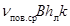
Таким образом, в указанном простейшем случае
беззаторный пропуск некоторого постоянного расхода льда теоретически возможен
при условии, что 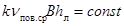
В природе формирование речного русла осуществляется
водным потоком при условии νсрω = const
и в ряде случаев, за счет изменения
глубин, условие постоянства ледопропускной способности не выдерживается. Кроме
того, в действительности вместо прямолинейного однорукавного русла мы имеем,
как правило, криволинейное и зачастую многорукавное русло, где появляется ряд
дополнительных затруднений для продвижения льда. Таким образом,
появление заторов на большинстве наших рек, текущих на юг, должно было бы стать
неизбежным. Однако этого не наблюдается, потому что расход воды Q
вниз по реке возрастает, а расход льда Qл падает вследствие таяния льда. На указанных реках или
отдельных участках их, находящихся в свободном состоянии, беззаторный пропуск
ледохода возможен, если кривая , где l
- длина реки от истока до устья, нигде не пересекается с кривой 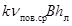
Иная картина наблюдается на реках, текущих с юга на север. Здесь количество льда, движущегося вниз по течению реки, не только не уменьшается, но в большинстве случаев растет. Кроме того, поступающая с верховьев паводочная волна и лед встречают на своем пути ненарушенный ледяной покров, что неизбежно ведет к образованию заторов.
Отсюда вытекает, что в первом случае (река течет с севера на юг), рассматривая меры предупреждения заторов, можно говорить о проблеме беззаторного пропуска льда по реке, во втором же случае (река течет с юга на север), как правило, должен ставиться вопрос о мероприятиях, снижающих или ликвидирующих затор в данном пункте, где он приносит значительный ущерб, и перенесении его в другой пункт, где образование затора не наносит ущерба народному хозяйству, а в некоторых случаях является даже желательным (в качестве примера можно указать реку Северную Двину, где затор в Архангельске наносит всегда значительный ущерб, а затор в районе Вождеромки чрезвычайно важен для сельского хозяйства, так как обеспечивает затопление и надлежащее увлажнение пойменных лугов. Кроме того, затор в районе Вождеромки ослабляет всегда затор в районе Архангельска, а потому и в этом плане является мероприятием желательным).
Разработка наиболее оптимального сочетания предупредительных мер для данных условий должна вестись путем такого же процесса проектирования, какой применяется для гидротехнических сооружений. Не исключено при этом, что в некоторых случаях осуществление единовременных защитных мер (обвалование, перенос объектов) может оказаться экономически более целесообразным.
В случаях, когда предсказать место образования руслового затора невозможно, особое внимание должно уделяться мерам защиты от наводнений и наиболее целесообразным методом ликвидации затора с целью предотвращения или уменьшения наводнения. В конечном счете, задача состоит в ускорении прорыва затора, так как резкое снижение уровня может произойти только в этом случае.
Ликвидация уже образовавшихся заторов может вестись при помощи ледоколов, взрывов, бомбометания с самолетов, артобстрела, термитных смесей, регулирования уровня водохранилища.
Затор льда в естественном состоянии разрушается, в основном, под влиянием гидростатического давления воды, скапливающейся выше затора, тепловых факторов и влекущего течения потока, проходящего через затор. Сущность борьбы с заторами льда поэтому должна заключаться в усилении влекущего течения потока, проходящего через затор. Это способствует выносу отдельных льдин из затора, уменьшает сопротивление тела затора потоку, что, в свою очередь, увеличивает пропускную способность и снижает подпорный горизонт воды.
Развитие этого процесса может быть достигнуто путем создания в низовой части головы затора отверстия в виде канала, свободного ото льда. Вода, фильтрующаяся через затор, устремляется в образовавшийся канал и начинает размывать его, унося лед из канала. При углублении канала внутрь затора (снизу вверх по реке) скорость течения в канале возрастает, и, наконец, наступает момент, когда давление воды в заторе и влекущая сила потока в канале начинают превосходить силы сцепления льдин между собой и с берегами.
В этот момент начинается прорыв затора. В движение приходит лед, находящийся в средней части затора (по ширине реки), а затем в движение вовлекаются все новые массы льда от середины к берегам, пока не приходит в движение вся масса льда, находящаяся в заторе. Происходит прорыв затора. Прорыв затора сопровождается убылью воды, поэтому движение льда у берегов замедляется, а затем и совсем прекращается. Ледоход продолжается в средней части потока, а в прибрежной части остаются навалы льда в виде многослойных беспорядочных нагромождений.
Для борьбы с заторами наиболее эффективны ледоколы, взрывные работы и отчасти бомбометания.
Необходимо отметить, что не всякий затор можно ликвидировать. Например, значительные по протяженности заторы на реках Сибири, образующиеся при сравнительно небольших расходах воды, обладают высокой устойчивостью. Искусственное разрушение подобных заторов льда указанными средствами невозможно.
Прежде чем приступать к разрушению затора необходимо в первую очередь выявить его особенности, а затем намечать наиболее рациональные методы разрушения.
К разрушению затора, образующегося в начальный период ледохода из скопления местного льда, приступают после того, как ниже головы затора образуется свободный ото льда участок воды, куда можно будет спустить лед из затора.
К разрушению затора, образующегося во время ледохода из скоплений транзитного льда, эффективней всего приступить в момент его образования, используя для этой цели средства разрушения. Разрушение сформировавшегося затора более сложно вследствие уплотнения льда в заторе и значительного увеличения количества льда в его теле.
В вопросе ликвидации заторов огромное значение имеет фактор времени, поэтому первостепенное значение приобретают своевременное обнаружение момента образования затора и быстрое принятие мер по его ликвидации. Для обеспечения первого необходимо систематическое авианаблюдение на участке, где возможно образование затора. Ликвидация образующегося затора лучше всего может быть осуществлена взрывом при условии быстрой доставки вертолетом бригады взрывников в район затора, или применением бомбометания. Если период формирования затора пропущен, то наряду с взрывами, целесообразно применять ледоколы, когда сделать это позволяют глубины и наличие самих ледоколов.
Разрушение затора необходимо начинать с нижней его кромки вверх по реке. При многорукавном русле вначале разрушается в главном, а затем во второстепенных рукавах. Первоначальное разрушение затора во второстепенном рукаве приводит к понижению уровней воды в главном русле, в результате чего лед в нем может сесть на грунт, плотность ледовых масс увеличится, что значительно затруднит работы по разрушению такого затора.
Если затор образовался у кромки неразрушенного ледяного покрова, то прежде чем приступать к его ликвидации необходимо разрушить этот ледяной покров или создать в нем канал для пропуска льда, скопившегося в заторе.
В том случае, если на реке образовался ряд заторов, то к ликвидации их следует приступать с нижнего по течению, в противном случае прорыв вышерасположенного затора может привести к усилению нижерасположенного. Подробное рассмотрение различных способов ликвидации заторов изложено ниже в соответствующих главах, посвященных применению ледоколов, взрывов, бомбометания с самолетов.
1. При организации борьбы с заторами и зажорами следует иметь в виду, что применение бомбометания, взрывов, артобстрелов крайне нежелательно из-за большого вреда, наносимого ими рыбному хозяйству, и риска повреждения сооружений, населенных пунктов. Рекомендовать применение этих мер можно в исключительных случаях. Основным способом избежания применения всякого рода взрывов является организация предупредительных работ по предотвращению заторов.
2. Любые мероприятия по борьбе с заторами и зажорами льда должны проектироваться и проводиться с участием специалистов-гидрологов, работающих в местных организациях Гидрометслужбы и Минводхоза, с обязательным обеспечением преемственности. Борьба с заторами и зажорами, которая ведется без учета природных особенностей реки и закономерностей процесса, часто сопровождается бесполезной затратой средств и даже может способствовать усилению этих явлений и их отрицательных последствий.
3. Большое значение для повышения эффективности предупреждения и борьбы с заторами имеет надлежащая организация всех работ.
Вся работа должна проводиться систематически, осуществляться на основе специально выполненных проектно-изыскательских проработок, сосредотачиваться в постоянных органах.
4. Важное значение в организации борьбы с заторами и зажорами имеет четкая оперативная информация. В период проведения защитных мероприятий на это обстоятельство необходимо обращать особое внимание, заранее организовав разведку, связь, обработку натурных наблюдений с целью прогнозирования отдельных элементов (глава II).
5. При проведении любых работ на реках, связанных с нарушением ее естественного режима (возведение мостов, дамб, запруд, выправительные работы), необходимо всегда оценивать влияние их на процессы заторообразования, добиваясь, в крайнем случае, сохранения ледопропускной способности русла на данном участке.
Эффективная борьба с заторами и зажорами льда может вестись на основе учета природных закономерностей и немыслима без организации четкой оперативной информации, отражающей развитие ледовых процессов на реке на интересующий момент времени.
Систематические наблюдения за заторами льда выполняются органами Гидрометеорологической службы СССР. В состав наблюдений входят:
- учащенные наблюдения за уровнями воды на близко расположенных друг от друга водомерных постах;
- авиаразведки и наземные обследования ледового состояния реки;
- наблюдения за стоком льда;
- ледомерные съемки.
Осуществление указанного комплекса наблюдений позволяет организовать службу информации и получить некоторые возможности предсказания заторов льда, а также применять наиболее эффективные средства борьбы с заторами.
Выбор участка наблюдения за уровнем воды
На участке реки, где ежегодно образуются заторы льда, устраивается сеть временных водомерных постов. Число сезонных постов должно составить 3 - 5 (кроме 1 - 2 постоянно действующих, или опорных постов). Общая длина исследуемого участка может достигать 15 - 20 км.
Водомерные посты предпочтительно располагать в местах перегибов продольного профиля реки. Расстояние между постами может быть 1 - 4 км - в зависимости от характера реки. Если переломы продольного профиля неясно выражены, посты располагаются более или менее равномерно. Падение между постами при открытом русле должно составлять 0,25 - 0,35 м.
При организации водомерных постов следует обратить внимание на удобство сообщений по берегу между ними, а также на наличие телефонной связи и возможность производства наблюдений в ночное время. Необходимо также обратить внимание на обеспечение сохранности постов от возможных повреждений льдом при подвижках, навалах и т.д.
В первый год организации наблюдений необходимо собрать материалы, характеризующие морфометрические и другие главнейшие природные особенности участка реки. Прежде всего, нужны план участка в горизонталях (и изобатах) и продольный профиль. На плане показываются зоны затопления при разных уровнях, скорости течения, важные хозяйственные объекты и пр. Продольные профили вычерчиваются при различных (округлых) значениях расхода воды.
Отметки нулей графиков всех водомерных постов обязательно даются в данной высотной системе. На первых порах возможно установление отметок нулей графиков методом «водной нивелировки». Желательно избрать для всех постов единую плоскость нуля графика. Это предотвращает многие ошибки и облегчает обработку материалов наблюдений.
Детальность, или число сроков наблюдений за уровнями, определяется характером колебания самого уровня и развитием ледовых явлений на участке. До начала подвижек могут производиться двухсрочные наблюдения за уровнем на всех постах (8 - 20 часов) С момента начала подвижек число сроков наблюдений увеличивается до 4 - 6. В последующем наблюдения производятся каждые 3 - 4 часа и чаще. Когда уровень достигает опасных отметок, нужны ежечасные наблюдения. На всех постах уровень должен измеряться в один и тот же срок. Уровенные наблюдения на временных водомерных постах прекращаются через 2 - 3 дня после окончательного очищения реки ото льда.
Авиаразведки и наземное обследование ледового состояния реки
Авиаразведки доставляют сведения о ледовом состоянии главных рек бассейна на значительном протяжении. Оптимальная скорость полета 100 - 140 км/час, высота полета - 400 - 600 м. Предпочтительно вести облет рек сверху вниз по течению - при этом легче составить представление о состоянии процесса вскрытия.
Ледовая обстановка изображается на крупномасштабной карте реки специальными знаками; прочие сведения заносятся в бортовой журнал. При авиаразведке очень важна правильная привязка к местности, поэтому в затруднительных случаях необходимо фиксировать время нахождения самолета над различными ориентирами (мосты, устья рек, крупные населенные пункты и т.д.).
Всего за период вскрытия выполняется 3 - 5 полетов. Первый полет делается в момент, когда на реках начинаются подвижки льда. При этом важно зафиксировать участки с торосистым льдом (место осенних заторов), ширину закраин, местоположение крупных полыней и открытых участков. В дальнейшем полеты совершаются через 1 - 3 суток. Основным результатом авиаразведки является заключение о границах участков, где в данный момент наблюдаются подвижки, заторы, ледоход. В частности, признаки затора льда (снизу вверх по течению): сквозные трещины-поля и крупные льдины - торосы большие, а затем малые - густой ледоход и средний ледоход. В местах интенсивного торошения много истертого льда белесого цвета, а поверхность ледяного покрова обычно имеет иссине-грязный оттенок. О спаде уровня при смещении затора или его прорыве свидетельствуют навалы льда на берегах.
Наземные береговые обследования производятся непосредственно на изучаемом заторном участке реки для получения детальных сведений об особенностях процесса вскрытия и заторообразования. С этой целью применяются вертолеты. При обследованиях на карте-бланке фиксируются: закраины, вид поверхности ледяного покрова (торосы, трещины), положение затора, навалы льда на берегах и т.д. Отмечается также скорость движения льда и густота ледохода.
Наблюдения за стоком льда
Эти наблюдения производятся с целью получения данных о количестве льда, подносимого течением к затору. Створ наблюдений выбирается в 2 - 4 км выше заторного участка (вне пределов подпора). Наблюдательный пункт устраивается на высоком берегу.
Сток льда подсчитывается на основании кривой расходов льда и наблюдений за густотой ледохода. Расход льда получается как произведение четырех сомножителей
где η - густота ледохода в долях единицы (доля поверхности реки, покрытой плывущим льдом);
hл - средняя толщина плывущего льда, м;
В - ширина реки, м;
ν - средняя скорость движения льда, м/сек.
При непрерывно изменяющейся густоте ледохода необходимо в течение светлой части суток произвести 4 - 6 измерений расходов. При малоизменяющейся густоте ледохода число измерений может быть сокращено по 2 - 3. Густота ледохода фиксируется гораздо чаще - через 1 - 2 часа.
По данным измерений строится кривая расходов льда 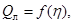
Ледомерные съемки
При ледомерных съемках измеряется толщина ледяного покрова, толщина скоплений льда в заторе, высота торосов и навалов льда на берегу и пр.
Можно различать облегченную ледомерную съемку, которая производится по стрежню реки, и сплошную съемку (точнее съемку по часто расположенным поперечникам).
Облегченная ледомерная съемка выполняется перед вскрытием на значительном протяжении реки для определения объема льда в русле и выявление возможных мест затора. Расстояние между промерами определяется сложностью рельефа ледяного покрова. При сравнительно ровном ледяном покрове промеры делаются через 0,3 - 1,0 км, а при больших торосах - через 200 - 300 м.
Непосредственно на заторном участке ледомерная съемка (облегченная или сплошная) производится в момент существования затора. Расстояние между поперечниками 100 - 300 м, число промерных точек на поперечниках от 3 - 4 до 7 - 10.
Следует считаться с тем, что работы на льду при заторах льда сопряжены с риском для людей, и в первую очередь, при подвижках. В связи с этим необходимо соблюдать максимальные меры предосторожности, в частности, широко использовать вертолеты.
Дополнительные виды наблюдений
Для анализа процесса заторообразования нужны дополнительные наблюдения: за расходами воды, температурой воды и воздуха, осадками. Эти наблюдения обычно производятся на действующей гидрометеорологической сети.
Специально необходимо выполнять наблюдения за эффективностью применяющихся способов борьбы с заторами льда. Сюда входит описание способов борьбы, затрат рабочего времени, стоимость работ и пр.
Особое внимание обращается на изменения в ходе уровня и ледовой обстановки, происшедшие в результате принятия мер борьбы.
Примечание. Наблюдения над зажорами льда ничем не отличаются от наблюдений за заторами и проводятся в том же объеме.
Материалы наблюдений за процессами заторо- и зажорообразования оформляются в виде технического отчета за каждый зимний период в отдельности, и включают:
1. Табличные материалы:
а) таблицы уровней воды;
б) таблицы измеренных расходов льда;
в) таблицы подсчета стока льда;
г) таблицы температуры воды и воздуха;
д) ведомость с результатами ледомерной съемки;
е) таблицы расходов воды;
ж) таблицы с данными о местоположении кромки льда, густоты ледохода и ширины реки у кромки.
2. Графические материалы:
а) детальный план заторного участка реки (в горизонталях и изобатах) с указанием местоположения водомерных постов, створа наблюдений за стоком льда, а также основных ориентиров (впадающих рек, дорог, мостов и пр.);
б) схематический план реки с результатами ледомерной съемки, где также показывается расположение поперечников, мест навалов льда, торосов и т.д.;
в) совмещенный график колебания уровня воды по всем водомерным постам в абсолютных отметках (или над единой плоскостью нуля графика). На этом же графике изображается ход температуры воздуха по срочным наблюдениям, полусуточные величины стока льда, густота ледохода и ледовые фазы. Масштаб времени берется достаточно крупный;
г) картограмма участка реки с ледовой обстановкой. В зависимости от изменения ледовой обстановки, число картограмм колеблется от одной картограммы в 2 - 3 дня до 5 - 6 картограмм в сутки;
д) карты с ледовой обстановкой на главных реках бассейна по материалам авиаразведок и маршрутных обследований;
е) продольный профиль реки по материалам ледомерной съемки. На профиле помещаются такие данные, как толщина скоплений льда и шуги, высота торосов и навалов на берегах и пр.
ж) продольные профили водной поверхности реки в характерные моменты: перед подвижкой, в начале ледохода, в момент наступления максимального уровня, при прорыве затора, после прорыва затора и т.д. Для облегчения анализа на одном графике совмещаются 3 - 4 профиля.
Одним из способов борьбы с заторами является заблаговременное предсказание их, что позволяет заранее организовать принятие соответствующих мер борьбы с ними.
Предсказание заторов складывается из прогноза самого факта образования затора в данном створе и прогноза максимального заторного уровня воды.
В настоящее время существует довольно полное представление об условиях образования и разрушения заторов, о создаваемом ими подпоре и факторах, определяющих максимальный заторный уровень. Известны также и морфологические особенности русел, благоприятствующие образованию заторов и определяющие возможные места их образования (гл. I). Однако в большинстве случаев предсказание мест образования заторов является весьма затруднительным. В этом отношении наиболее неопределенными местами образования заторов являются участки переходов от перекатов к плесам. Объясняется это тем, что на однородном по морфологическим особенностям протяжении реки среди многих участков перехода от переката к плесу есть и такие, на которых образование затора по динамико-морфологическим и климатическим условиям равновероятно.
Прогноз образования затора (будет он или не будет) может составляться по интенсивности подъема уровня воды до начала подвижек льда, на основе использования данных многолетних наблюдений и рассмотрения аналогов. При этом для прогноза образования затора нужно знать не саму величину интенсивности подъема уровня, а лишь вероятность превышения некоторого известного предела ее. Произойдет ли интенсивность подъема? Этот предел на практике часто определяют на основании ожидаемых условий стока талой воды с поверхности бассейна, которые известны с боль эй заблаговременностью, чем интенсивность подъема уровня воды.
Прогноз вероятности образования затора при вскрытии реки может также в ряде случаев основываться на учете максимального уровня воды в начальный период ледостава [48]. Если ледостав на участке происходит при высоком уровне, причиной чему часто служат зажорные явления, то образуется при этом более толстый ледяной покров. Более позднее вскрытие такого участка в месте с более толстым льдом образует условия для образования заторов на реках, текущих, в основном, с юга на север.
Места образования затора - один из важнейших факторов, определяющих высоту заторного подъема уровня воды в данном пункте выше затора. Для участков рек с существенно непостоянными местами образования заторов получить удовлетворительную зависимость заторного подъема уровня воды от определяющих факторов без учета места образования затора нельзя.
Исследования возможностей прогноза мест образования заторов хотя бы на наиболее затороопасных реках потребовали бы огромных усилий в связи с чрезвычайно большой трудоемкостью необходимых для этого натурных исследований, которые должны выполняться в течение достаточного ряда зимне-весенних периодов.
Тем не менее, во всех случаях необходима четко изложенная оперативная гидрологическая информация. На ее основании можно судить о местоположении затора льда, времени его прорыва, скорости перемещения ледовых масс и т.д. Часто удается приближенно оценить размер ожидаемого подъема уровня.
Первым всегда возникает вопрос: где сейчас находится затор льда? Ответ, прежде всего можно получить путем обследования реки. Однако не всегда бывает это возможно сделать (например, в ночное время, при отсутствии дорог и транспорта, в нелетную погоду), поэтому в затруднительных случаях место затора может быть установлено путем анализа графиков колебания уровней, а лучше - продольного профиля водной поверхности. При этом возможен ряд типовых случаев.
1. Имеется один водомерный пост. На образование затора льда ниже поста указывает резкий подъем уровня (при близком расположении затора). Длина участка (км), на которой сказывается влияние подпора от затора, примерно равна 1,5 DН/i (где DН - подъем уровня, м; i - уклон в промилях).
2. Имеется два водомерных поста. Образование затора льда между постами при сравнительно близком их расположении приводит к тому, что на верхнем посту уровень повышается, а на нижнем несколько понижается. О возникновении затора при значительном расстоянии между постами можно иногда судить по уменьшению густоты ледохода на нижнем посту (с учетом времени добегания).
3. Имеется несколько близко расположенных водомерных постов. Местоположение затора льда определяется по продольному профилю водной поверхности: оно совпадает с наиболее крутым участком профиля. Наибольший подъем уровня отмечается в пункте, где в данный момент происходит торошение льда.
Вторым возникает вопрос о том, когда образуется затор льда, в частности, когда наступит максимальный уровень? Обычно затор возникает в момент начала массового ледохода на значительном по протяженности участке реки. Иногда затор льда наблюдается в нижней части ранее вскрывшегося участка. При этом момент образования затора совпадает с подходом больших масс льда сверху.
Вопрос о величине максимального заторного уровня (или мощности затора), является наиболее важным при прогнозировании заторов. На современном этапе о сколько-нибудь обоснованном прогнозировании мощности затора можно говорить для тех мест, где заторы образуются постоянно. Это, в основном, участки общего уменьшения уклона реки, морфологические аномалии.
Для створов расположенных в зоне подпора от затора, имеющего постоянное из года в год место образования, могут быть установлены прогностические зависимости между максимальным уровнем и одним или двумя определяющими факторами. В зависимости от местных условий такими факторами могут быть:
1. Объем льда в русле реки в начале вскрытия. Вместо объема могут быть использованы такие характеристики, как толщина льда, сумма отрицательных температур воздуха и т.п. Указанные типы зависимостей имеют место для рек со значительными от года к году колебаниями объема льда в русле реки, что характерно для областей с умеренно холодной зимой, например, они получены для р. Даугавы у г. Яунелгава.
2. Интенсивность паводка, характеризуемая интенсивностью подъема уровня в период ледохода. Такого вида связи возможны для рек Днепра, Немана, Вислы и др.
3. Отрицательная температура в период вскрытия реки.
4. Интенсивность потепления, равная сумме положительных температур воздуха от момента устойчивого перехода их через 0° до даты ледохода, отнесенной к длительности этого периода.
5. Разница между временем вскрытия основной реки и ее крупных, притоков.
Имея многолетний ряд достаточно подробных наблюдений гидрометеорологических элементов на реке, можно установить связь между максимальным возможным подъемом уровня воды при заторе DН3 и главным фактором заторообразования для данной реки, которым обычно является один из факторов, перечисленных выше, в пунктах 1 и 2.
Следует отметить, что при этом в отдельные годы роль других факторов может усилиться и нарушить основную зависимость. В таких случаях необходимо вносить соответствующие поправки, используя связи DН3 с другими факторами.
Имея такие связи DН3 с Qл (объемом льда) или Jл (интенсивностью подъема уровня), дополненные соответствующими поправками от других действующих факторов, на основании ожидаемых условий стока талой воды и прогноза погоды можно с известной степенью точности прогнозировать заторный подъем уровня.
Изложенный способ прогнозирования заторных подъемов уровня может давать удовлетворительные результаты, но может и не учитывать особенностей конкретной обстановки текущего года. Для рек или их участков, по которым имеются достаточно подробные данные наблюдений в зимне-весенний период за длительный промежуток времени возможно составление более обоснованной методики предсказания заторных уровней, в зависимости от условий развития паводка по длине реки.
Так, для р. Днестр у г. Сороки, находящегося в зоне подпора от постоянно образующегося затора у с. Воронково, оказалось возможным по данным наблюдений за 1945 - 69 гг. установить связи высоты подъема заторного уровня воды от максимальной (из средних суточных величин) интенсивности подъема уровня воды на вышерасположенных водомерных постах, находящихся на расстоянии до 600 км [16] .
Заблаговременность предсказания DН3 при такой методике прогнозирования определяется временем продвижения кромки вскрытия реки от вышерасположенного водомерного поста до рассматриваемого створа и составляет несколько дней.
Ускорение вскрытия участков рек в целях предупреждения образования авторов связано с работами по предварительному ослаблению и расчленению ледяного покрова. Ослабленный ледяной покров при первом повышении уровней воды и скоростей течения взламывается и быстро сносится вниз с заторного участка, открывая акваторию для приема поступающих с вышележащих участков масс льда.
В настоящее время в практике борьбы с заторами находят применение следующие методы ослабления льда:
1. Использование радиационного тепла.
2. Посыпка льда химикатами.
3. Замедление роста льда зимой (применение теплоизоляции из снега, пенольда и т.п.).
Применение этих методов возможно как отдельно, так и в комплексе. Эти мероприятия очень эффективны, когда применяются вместе с ледоколами или ледорезными машинами.
Общей особенностью этих методов является то, что эффект их заметен при применении на больших протяжениях течения реки, от 10 км и больше. Поэтому при их применении особенно важна более полная механизация операций.
Общие положения
Радиационный метод предусматривает максимальное использование энергии солнца для таяния льда. Солнечные лучи, падая на земную поверхность, частично ею отражаются, а частично поглощаются. Отражательная способность поверхности зависит в основном от ее цвета: свежевыпавший снег отражает до 90 % от всей падающей на него солнечной радиации; водная поверхность, наоборот, поглощает почти всю падающую на нее радиацию и отражает ее около 10 %; полностью поглощают энергию солнца черные тела (уголь, сажа и др.). Лед по сравнению со снегом является более прозрачным материалом, солнечная энергия глубоко проникает внутрь льда и разрушает лед на кристаллиты в результате растапливания льда в межкристаллических каналах с повышенной соленостью. Солнечная энергия обычно поглощается верхним слоем снега толщиной до 6 см. Поэтому наличие снега на льду уменьшает поступление солнечной энергии ко льду и препятствует его разрушению.
Действие зачернения на снег, лед и покрытый снегом лед
Действие зачернения на снег заключается в ускорении таяния зачерненного снега по сравнению с таянием естественного незачерненного снега. Под действием солнечной радиации таяние зачерненного снега может происходить при отрицательных температурах воздуха в дневное время суток. Если зачерненный снег стаивает полностью при вышеуказанных условиях, то возможно увеличение толщины ледяного покрова из-за замерзания на льду воды от растаявшего зачерненного снега. При выпадении осадков в виде снега зачерненный материал оказывается внутри льда под слоем выпавшего снега и положительное действие зачернения сводится к нулю.
Действие зачернения на лед без снега состоит в нарушении структуры льда за счет проникновения зачерняющих материалов внутрь его и зависит от крупности опыливающих частиц и структуры льда. Глубже всего в лед проникают частицы мелких фракций с диаметром частиц 0,2 - 0,5 мм. Частицы с диаметром выше 0,5 - 1,0 мм остаются на поверхности льда.
Темные пылевидные частицы более глубоко проникают в кристаллический лед, на меньшую глубину - в снеговой лед и почти совсем не проникают в торосистый лед. После ухода зачерняющих материалов внутрь льда верхняя его поверхность, свободная от воды, приобретает более светлую окраску. Однако дальнейшее разрушение льда продолжается и происходит под влиянием зачерняющих материалов, поглощающих проникающую в лед радиацию. Наиболее эффективным периодом для таяния зачерненного льда является период со среднесуточными положительными температурами воздуха.
Действие зачернения на лед, покрытый снегом, приводит к более раннему сроку схода зачерненного снега по сравнению со сроком схода незачерненного снега. В результате удлиняется период таяния и разрушения зачерненного льда, а, следовательно, увеличивается толщина растаявшего и глубина разрушенного сверху слоя льда.
После появления на льду воды, поглощающей почти всю падающую на нее радиацию, таяние зачерненного льда сверху почти не зависит от степени зачернения. Скорости таяния зачерненного и незачерненного льда, покрытого водой, оказываются почти одинаковыми. Несмотря на наличие воды на льду, происходит разрушение льда проникающими в лед темными частицами. Глубина их проникновения зависит от толщины слоя воды на льду, диаметра зачерняющих частиц и структуры льда.
К достоинству радиационного метода разрушения льда следует отнести использование бесплатной мощной солнечной энергии, возможность работы на любых участках, быстрота обработки и малая стоимость работ. Он особенно эффективен в условиях большой продолжительности периода солнцестояния в течение суток (Арктика, Крайний Север). Недостатком этого метода является зависимость его от метеорологических условий (температуры воздуха, осадков в виде снега) и актинометрических условий (интенсивности и продолжительности солнечного сияния), а также от структуры льда.
Область применения
Радиационный метод разрушения льда целесообразно применять как самостоятельный метод, если под действием зачернения происходит разрушение льда на всю его толщину. Если этого не происходит, то зачернение эффективно в комплексе с работой ледоколов или судов с ледовым подкреплением. При этом облегчаются и ускоряются работы судов во льду и, кроме того, появляется возможность работы во льду маломощных судов, не способных взламывать неослабленный лед. Радиационный метод разрушения льда не рекомендуется применять на тех участках рек, заливов и водохранилищ, вскрытие которых происходит раньше наступления теплой погоды, т.е. раньше даты перехода среднесуточных или дневных положительных температур воздуха через 0° С.
Эффективность зачернения
Эффект от зачернения тем больше, чем больше интенсивность и продолжительность воздействия солнечной радиации, продолжительность и температура теплого периода, предшествующего вскрытию, т.е. периода с момента устойчивого перехода дневных (в районах с континентальным климатом) или средне-суточных (в районе с неустойчивой погодой) положительных температур воздуха через 0° С до момента вскрытия реки.
На водохранилищах, в морских бухтах и заливах эффективность от зачернения в несколько раз больше, чем на реках вследствие наличия кристаллической структуры льда в стоячих водоемах и более длительного теплового периода, предшествующего вскрытию. На реках период наиболее эффективного действия зачернения сокращается вследствие взламывания ледяного покрова паводочной волной. Эффективность зачернения снега и льда может быть приближенно оценена коэффициентом, представляющим собой отношение поглощающих способностей зачерненного и незачерненного снега или льда
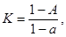
где А - коэффициент отражения зачерненного снега или льда;
а - коэффициент отражения незачерненного снега или льда.
Эффективность таяния зачерненного льда сверху после схода с него снега может быть также в первом приближении оценена коэффициентом η, показывающим отношение продолжительности таяния Т зачерненного льда к продолжительности таяния t незачерненного льда:
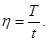
Материалы для зачернения
Для зачернения применяются порошки темного цвета, с удельным весом больше единицы и отсутствием у них канцерогенных (опасных для здоровья человека) свойств. Такими материалами являются: угольная и шлаковая пыль, фосфоритная мука (минеральное удобрение), формовочная земля (отходы литейной промышленности), черный чесок, а также песок в смеси со шлаковой или угольной пылью из расчета 50 % песка и 50 % шлака или угля.
Шлаковая пыль и фосфоритная мука по их действию на лед равноценны с угольной пылью, поэтому применение их для зачернения позволит значительно снизить расходы по зачернению.
Не рекомендуется применять сажу и черный пигмент (отходы лакокрасочной промышленности) из-за наличия у них канцерогенных свойств. Сажа, кроме того, не оказывает разрушающего действия на лед, частицы сажи собираются в зернистые комки, которые плавают на поверхности воды и не проникают в лед.
Нормы расходования зачерняющих материалов
Максимальная норма расхода зачерняющих материалов на 1 м2 определяется из условия сплошного покрытия льда зачерняющими материалами на высоту, равную одному диаметру зачерняющих частиц. Эта норма может быть вычислена по формуле:
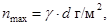
где γ - объемный вес зачерняемого материала, г/м3;
d - диаметр частиц зачерняемого материала, (м). Диаметр не должен превышать 0,5 мм, исходя из условия проникновения зачерняющих материалов внутрь льда.
Максимальные нормы расхода зачерняющих материалов в зависимости от диаметра зачерняющих частиц при
γ = 1 т/м3 = 106 г/м3
могут быть приняты следующими:
При d = 0,1 мм nмакс = 100 г/м2 (1 т/га);
d = 0,2 мм nмакс = 200 г/м2 (2 т/га);
d = 0,3 мм nмакс = 300 г/м2 (3 т/га);
d = 0,4 мм nмакс = 400 г/м2 (4 т/га);
d = 0,5 мм nмакс = 500 г/м2 (5 т/га);
С увеличением диаметра зачерняющих частиц нормы расхода материала и стоимость работ по зачернению резко возрастают. Однако отражательные способности снежно-ледяного покрова, опыленного темными зачерняющими материалами из расчета nмакс и 50 % от nмакс, незначительно отличаются друг от друга. Поэтому вышеуказанные нормы расхода зачерняющих материалов без значительного ущерба для эффекта от зачернения можно уменьшить на 50 % от nмакс. После сильных снегопадов с толщиной свежевыпавшего снега более 5 см целесообразно производить повторные работы по зачернению. Нормы расхода зачерняющих материалов при этом могут быть уменьшены до 15 - 25 % от nмакс.
Количество зачерняющих частиц, приходящихся на 1 см2 поверхности в зависимости от диаметра этих частиц и норм посыпки при удельном весе материала, равном единице, определяется по графику (рис. 3). При значениях удельного веса материала больше единицы необходимо нормы расхода зачерняющих материалов на графике умножить на значение удельного веса данного материала.
С увеличением диаметра зачерняющих частиц (при одной и той же норме расхода зачерняющих материалов) уменьшается количество этих частиц, приходящихся на единицу площади зачерненной поверхности, и, вследствие этого, уменьшается степень разрушения ледяного покрова за счет проникновения зачерняющих материалов внутрь льда. К увеличению диаметра зачерняющих материалов приходится прибегать в случае производства работ по опыливанию с большой высоты (20 - 50 м и более), вызывающей рассеивание зачерняющего материала на значительной площади за пределы намеченной трассы зачернения (участки рек с высокими берегами и другими выступающими предметами, исключающие снижение самолета до 5 - 10 м).
Минимальные нормы расхода зачерняющих материалов, установленные на основании опытных работ, не должны быть меньше следующих значений:
При d = 0,1 мм nмин = 50 г/м2 (0,5 т/га);
d = 0,1 - 0,3 мм nмакс = 50 - 100 г/м2 (0,5 - 1,0 т/га);
d = 0,1 - 0,4 мм nмакс = 150 - 200 г/м2 (1,5 - 2,0 т/га);
d = 0,1 - 0,5 мм nмакс = 350 - 400 г/м2 (3,5 - 4,0 т/га);
Рис. 8. Логарифмические кривые зависимости количества частиц, приходящихся на 1 см2 опыливаемой площади, от нормы расхода (г/м2) для различных диаметров распыливаемых частиц.
Сроки зачернения
Сроки зачернения зависят от температуры воздуха и выпадения осадков (снега). Зачернение следует проводить после окончания сильных снегопадов весной при температуре воздуха, исключающей намораживание льда сверху в результате замерзания на льду воды от растаявшего зачерненного снега.
Сроки работ по зачернению (без учета времени на производство работ) могут быть приняты для районов с резко континентальным и континентальным климатом - с момента устойчивого перехода дневных положительных температур воздуха через 0° С весной; для районов с неустойчивой погодой, характеризующейся частыми сменами похолоданий (среднесуточная температура меньше 0° С) и потеплений (среднесуточная температура больше 0° С) - с момента устойчивого перехода среднесуточных положительных температур воздуха через 0° С весной.
Осадки в виде снега, выпавшего после указанной даты, почти не оказывают отрицательного влияния на эффект зачернения ввиду быстрого схода снега (за 1 - 2 дня) под действием солнечной радиация при положительных температурах воздуха.
Сроки следует устанавливать на основе консультации с прогностическим центром погоды. При условии устойчивой антициклональной погоды зачернять можно и до перехода температур воздуха через 0° С.
Не рекомендуется производить зачернение снежно-ледяного покрова в поздние сроки, в разгар его интенсивного таяния и при наличии воды на льду. Сильно обтаявшие поверхности незачерненного снега и льда будут иметь почти одинаковую поглощательную способность, что и зачерненный в этот момент снег и лед.
Расположение и размеры трасс зачернения
Если радиационный метод разрушения льда применяется как самостоятельный метод, то трассы для зачернения располагаются также, как и трассы для ледорезных машин (гл. IV). Ширина трасс зачернения зависит от типа самолета, с помощью которого производится зачернение снежно-ледяного покрова, или от распыливателя, установленного на автомашине или вездеходе.
При опыливании с самолета типа ЯК-12 ширина трассы может быть принята равной 2,5 - 3,5 м, а с самолета типа АН-2 - 8 - 10 м.
Если радиационный метод разрушения льда применяется в комплексе с работой ледоколов или судов с ледовым подкреплением, то трассы зачернения располагаются по ледокольным трассам (гл. IV). Ширина трасс зачернения принимается не менее чем две ширины ледокольного судна при опыливании с самолета типа ЯК-12 или 8 - 10 м при опыливании с самолета типа АН-2.
Подготовительные работы включают в себя:
а) разбивку трасс зачернения и их закрепление на местности указателями, видимыми с воздуха;
б) выбор местных аэродромов или временных площадок, с которых должно проводиться опыливание;
в) подвозку, просев материалов для получения частиц нужной крупности.
Местные аэродромы или временные посадочные площадки располагаются поблизости от реки, на расстоянии 20 - 25 км друг от друга. Выбор их осуществляется местными отделениями гражданского воздушного флота.
Просев зачерняющего материала производится через сито в виде металлических сеток с диаметром ячеек до 0,6 мм. Отсортированные частицы крупностью более 0,5 мм засыпаются в обычную шаровую мельницу и перемалываются.
Хранение материалов для опыливания производится в специально устроенных складах простейшего типа, например, под навесом, во избежание смерзания и уплотнения материалов под влиянием осадков и низких температур воздуха.
Производство работ
Опыливание снежно-ледяного покрова может быть выполнено с самолетов типа ЯК-12, АН-2 и ЛИ-2, а также с автомашин, имеющих специальное приспособление для опыливания. Применение авиации позволяет в короткие сроки производить опыливание на больших площадях, расположенных за десятки и сотни километров от населенных пунктов.
Самолеты типа ЯК-12 имеют грузоподъемность 0,3 т, скорость полета 130 км/час и могут применяться при опыливании ближайших к аэродрому участков. При опыливании с высоты 5 - 10 м ширина опыливаемой полосы получается равной 2,5 - 3,5 м, а норма расхода зачерняющих материалов с диаметром частиц 0,1 - 1 мм с одного захода самолета - 30 - 40 г на 1 м2.
Самолеты типа АН-2 имеют грузоподъемность 1,0 т, скорость полета 160 км/час и могут применяться при опыливании участков, расположенных на расстоянии до 20 - 30 км от аэродрома. При опыливании с высоты полета до 10 м ширина опыливаемой полосы равна 8 - 10 м.
При расположении участка, подлежащего опыливанию, на расстоянии более 30 км опыливание рационально проводить с самолета типа ЛИ-2, имеющего грузоподъемность 2,0 - 2,5 т и скорость полета 190 - 200 км/час. При высоте полета 7 - 25 м ширина опыливаемой полосы составляет 15 - 20 м, за один заход норма опыливания достигает 10 г на 1 м2.
С увеличением высоты полета нормы опыливания уменьшаются, а ширина опыливаемой полосы увеличивается. При повторных работах, вызванных сильными снегопадами, зачернение целесообразно проводить с большей высоты, чем указано выше, для достижения меньшей нормы расходования зачерняющего материала.
Опыливание лучше проводить в безветренную погоду во избежание сноса ветром зачерняющего материала за пределы намеченной трассы. Наиболее благоприятным временем для опыливания являются ранние утренние часы. Стоимость работ по опыливанию зависит от нормы опыливания и приведена в табл. 1.
Порядок работ по зачернению снежно-ледяного покрова следующий. Вначале производится однократное зачернение трассы по всей ее ширине. К повторному зачернению, необходимому для достижения запроектированной нормы расхода зачерняющих материалов, приступают лишь после окончания однократного опыливания на всем протяжении запроектированных трасс. При такой организации работ по опыливанию достигается более равномерное и быстрое таяние снега на протяжении всего обрабатываемого участка, и, кроме того, может быть уменьшено отрицательное действие выпавшего снега на эффект от зачернения.
Контроль за работами по опыливанию ведется ежедневно, особенно, если эти работы проводятся впервые. Руководитель работ с последним рейсом самолета осматривает всю проделанную за день работу и после посадки самолета на аэродром указывает на ошибки, если они имеются, и совместно с летчиками намечает план и объем работ на следующий день.
После окончания всех работ по опыливанию производится прием работы, при котором определяется соответствие выполненных и запроектированных трасс опыливания и норма расхода зачерняющих веществ.
|
Стоимость, руб./га |
Норма опыливания, кг/га |
Стоимость, руб./га |
Норма опыливания, кг/га |
Стоимость, руб./га |
Норма опыливания, кг/га |
Стоимость руб./га |
||
|
100 |
1,0 |
300 |
2,3 |
750 |
5,4 |
1500 |
11,0 |
|
|
150 |
1,35 |
400 |
3,0 |
900 |
6,3 |
2000 |
14,5 |
|
|
200 |
1,6 |
500 |
3,7 |
1000 |
7,2 |
2500 |
18,0 |
|
|
250 |
2,0 |
600 |
4,5 |
1200 |
9,0 |
3000 |
23,0 |
|
Общие положения и применяемые материалы
Применение химических веществ для ослабления прочности и разрушения льда основано на свойстве некоторых из них давать со льдом смеси, которые имеют более низкую температуру плавления, чем их составляющие. Перечень таких веществ приводится в табл. 2.
Эти соли устойчивы на воздухе и не требуют особых мер предосторожности.
При нанесении вышеуказанных химических веществ на лед часть льда переходит в раствор. Характер и степень разрушения льда зависят от рода применяемого вещества, его крупности, норм опыливания, а также от температуры и структуры льда.
Под действием порошкообразных химических веществ лед стаивает равномерным слоем по высоте сверху вниз. При нанесении химических веществ на лед в виде отдельных комков они внедряются в лед, образуя вертикальные извилистые каналы. Лед приобретает ноздреватый вид с прочными ледяными перемычками. При этом одновременно идет как процесс снижения, так и увеличения прочности льда. Прочность льда уменьшается вследствие нарушения монолитности льда из-за образования в нем каналов, однако с расходом тепла на таяние льда в каналах увеличивается прочность оставшихся ледяных перемычек.
Достоинство этого метода заключается в быстроте действия химических веществ на лед. В натурных условиях при кристаллической структуре льда и положительных температурах воздуха комки соли крупностью от 2 - 2,5 см до 4 - 4,5 см через сутки после их нанесения на лед могут проникнуть в него на глубину от 20 до 70 см.
|
Электрическая концентрация, % |
Температура плавления смеси, °С |
Стоимость технического сорта, т/руб. |
||
|
1-ый сорт |
2-ой сорт |
|||
|
Хлористый натрий (поваренная соль) |
22,4 |
- 21,2 |
10 |
- |
|
Хлористый калий |
19,7 |
- 11,1 |
18,6 |
11 |
|
Хлористый аммоний |
18,7 |
- 15,8 |
90 |
80 |
К недостаткам этого метода следует отнести высокую стоимость материалов, снижение эффективности метода вследствие растворимости солей при наличии воды и снега на льду, а также водных прослоек внутри льда.
Область применения
Химический метод как самостоятельный целесообразно применять на ограниченной площади для местного разрушения льда, ввиду большой стоимости работ. (Например, с целью сплошного протаивания льда на всю его толщину и образования сквозной майны). Обычно этот метод следует рассматривать как вспомогательный и его рекомендуется применять совместно с работой ледорезных машин на участках рек с повышенной толщиной льда (толщина льда больше длины фрезы) и с включением большого количества бревен и других твердых предметов, а также в местах пересечения ледорезных трасс (гл. IV).
Сроки опыливания
Сроки опыливания льда химикатами зависят от вида ледяной поверхности (наличие воды и снега на льду) и от температуры воздуха. Во избежание замерзания при отрицательных температурах воздуха образовавшихся под действием химических веществ сквозных борозд во льду и растворения этих веществ в снегу или в воде, находящейся на льду, опыливание следует проводить при положительных температурах воздуха и отсутствии снега и воды на поверхности льда. Это имеет место в момент устойчивого перехода весной дневных температур воздуха через 0° С или после отрыва льда от берегов и схода воды со льда, т.е. за 2 - 3 дня до ледохода.
При наличии на льду снега посыпку химикатами можно производить по трассам, предварительно очищенным от снега бульдозером.
Нормы расходования
Нормы расходования химических веществ при сплошном протаивании льда (без ледяных перемычек) следует принимать в 7 - 10 раз меньше веса льда, подлежащего растворению. Объем расплавленного льда (см3), приходящийся на 1 г химических веществ в зависимости от температуры воздуха, приведен в табл. 3.
|
Объем расплавленного льда, см3, при температуре льда, °С |
||||
|
- 5 |
- 10 |
- 15 |
- 20 |
|
|
Хлористый калий |
10,3 |
4,7 |
|
|
|
Хлористый аммоний |
14,0 |
7,1 |
4,8 |
|
|
Хлористый натрий |
12,2 |
6,7 |
4,7 |
3,7 |
При посыпке во время теплой погоды с устойчивыми положительными среднесуточными температурами воздуха эффект от действия химикатов на лед возрастает и нормы расхода химикатов могут быть уменьшены примерно до 50 %.
Производство работ по посыпке льда химическими веществами
Ширина опыливаемой полосы может быть принята равной ширине ледорезной трассы (0,3 - 0,4 м) при посыпке с автомашины или 2,5 - 3,5 м при опыливании с самолета типа ЯК-12, дающего наименьшую ширину полосы, чем другие типы самолетов. При применении авиации увеличивается степень механизации работ, но возрастает расход химических веществ из-за опыливания площади за пределами ширины ледорезной трассы.
Производство работ по рассыпке химических материалов с самолетов такое же, как при опылении зачерняющими материалами. Если химические вещества имеют белый цвет, то их предварительно перемешивают с темными пылевидными материалами для создания смеси, заметной на льду после ее нанесения. Норма расхода зачерняющих материалов может составлять 5 - 10 г/м2.
Если замедлить рост льда в зимнее время, то к моменту вскрытия на данном участке реки лед имеет меньшую толщину, что ускоряет естественное вскрытие и облегчает проведение работ по искусственному разрушению льда любым из применяемых способов. Таким образом, на участке проведения предупредительных мероприятий по ускорению вскрытия в любом случае выгодно иметь более тонкий лед.
Замедлить рост льда можно путем создания соответствующего слоя теплоизоляции на его поверхности. Для создания изолирующего слоя могут быть использованы снег и пенолед.
В первом случае необходимо в течение зимы стремиться к созданию на реке возможно более мощного снежного покрова. С этой целью можно использовать установку различного рода простейших преград из подручного материала, способствующих отложению снега. Для этой же цели можно применять механическое перемещение снега с берегов на лед (например, при помощи бульдозеров). При создании теплоизоляции из снега следует обращать особое внимание на выбор сроков начала работ с тем, чтобы не перегрузить неокрепший ледяной покров, что приведет к смачиванию снега выступившей водой и образованию снежного льда.
Наиболее дешевым теплоизоляционным материалом, пригодным для целей замедления роста льда, является пенолед. Пенолед получается из воды, смешиваемой с пенообразователем и воздухом в специальной установке. Замерзая при отрицательных температурах, пена превращается в пенолед. Операция по нанесению пены полностью поддается механизации. Следует отметить, что пенолед существует только при отрицательных температурах, поэтому в районах с неустойчивой зимой применять его не рекомендуется.
Подробно свойства пенольда и технология его получения и нанесения освещена во «Временных указаниях на применение пенольда, как теплоизоляции в суровых климатических условиях».
Ускорение вскрытия рек может быть достигнуто с помощью механического расчленения ледяного покрова. Расчлененный ледяной покров при первом повышении уровней воды и скоростей течения в реке взламывается и сносится вниз, открывая возможности беззаторного пропуска поступающих с верховьев масс льда.
Механическое разрушение льда производится ледорезными машинами и ледоколами. Ледоколы, кроме того, могут применяться и для разрушения уже образовавшихся заторов.
Типы ледорезных машин и их характеристики
Ледорезные машины различных типов и мощностей применяются в тех случаях, когда из-за малых глубин невозможно применение ледоколов, или в комплексе с другими методами разрушения льда (с теми же ледоколами, с зачернением и т.п.).
Ледорезные машины бывают трех типов: с пильными цепями или барами от срубовых машин; ледофрезерные, с вертикальным режущим аппаратом; ледовые струги.
|
Мощность, л.с. |
Обслуживающий персонал |
Скорость при работе на льду различной толщины, м/час |
|||
|
0,5 |
1,0 |
1,5 |
|||
|
Ручная пробивка каналов |
0,05 |
1 |
7 |
3 |
2 |
|
Несамоходная ледофрезерная машина Лимендского завода МРФ. |
70 |
3 |
60 |
30 |
- |
|
Самоходная ледофрезерная машина ЛФМ-ГПИ-41 |
74 |
2 |
160 |
100 |
70 |
|
Ледовый струг с трактором-амфибией ТП-90 |
90 |
2 |
4500 |
2000* |
- |
|
Ледовый струг с плавающим тягачом ГТ-Т** |
200 |
2 |
12000* |
5000* |
- |
|
* Приблизительная оценка. ** Расчет по мощности двигателя. |
|||||
|
Производительность, м3/л.с./ час |
Производительность, м3/час |
Характер выработки |
Источник сведений |
|
|
0,3 |
- |
0,7 - 1 |
сквозной канал |
Нормы времени на ледокольные и выморозочные работы |
|
0,25 |
0,1 |
3 |
сквозной канал |
Нормы времени на ледокольные и выморозочные работы |
|
0,35 |
0,4 |
14 - 45 |
|
Фактические данные по Беломорско-Онежскому пароходству |
|
0,6 - 1,5 |
4,5 - 14 |
200 - 600 |
Борозда, недоходящая до нижней поверхности льда на 20 см |
Экспериментальные данные |
|
0,6 - 1,5 |
5,4 - 16 |
500 - 1600 |
Борозда, недоходящая до нижней поверхности льда на 20 см |
Расчет |
Ледорезные машины с цепями или барами имеют довольно простую конструкцию и высокую производительность. Создано несколько типов таких машин (на базе бензопилы «Дружба»; машины ДЛН-1 и ЛМ-3; машина Устинова-Тюхтина). Однако, как показал опыт, узкие щели, пропиливаемые этими машинами во льду, очень быстро снова смыкаются и лед смерзается, восстанавливая свою прочность. Поэтому ледорезные машины такой конструкции почти не пригодны для работ по предупреждению заторов. Ледофрезерные машины с вертикальными ножевыми или кулачковыми фрезами (ЛФМ-ГПИ-34 и ЛФМ-ГПИ-41, несамоходная машина ЧМП и ее улучшенный вариант, производящийся Лимендским заводом МРФ) прорезают во льду не узкую щель, а траншею, на доходящую до воды, или, в случае надобности, сквозную майну шириной в 25 - 45 см.
Ледовые струги, в отличие от упомянутых выше машин, не пилят и не фрезеруют лед, а скалывают его клином, ориентированным горизонтально и прицепленным наподобие плуга, к мощному плавающему тягачу или трактору-амфибии. Двигаясь по льду с большой скоростью, такой агрегат оставляет за собой борозду, не доходящую до нижней поверхности льда на 15-20 см. Проводятся эксперименты по прокладке при помощи стругов сквозных каналов (майн) во льду. В заводских условиях ледовые струги пока не производятся, но их конструкция настолько проста, что их можно изготовить хозяйственным способом в любой мастерской. Применение ледовых стругов пока еще не вышло за рамки эксперимента.
Производительность различных способов механического разрушения льда приведена в табл. 4.
Область применения, преимущества и недостатки ледорезных машин
Ледорезные машины, как средство предупреждения заторов, обладают рядом существенных достоинств, к числу которых относятся:
- возможность проведения мероприятий на несудоходных водохранилищах или участках рек, куда ледоколы доставить трудно или невозможно;
- возможность разрушения толстого льда, в котором речные ледоколы бессильны;
- возможность разрушения ледяного покрова не только на фарватере, но также и на мелководных участках, занимающих обычно преобладающую площадь;
- возможность переброски технических средств из одного речного бассейна в другой по суше, что позволяет значительно уменьшить их парк, концентрируя машины в наиболее опасном (по прогнозу) участке;
- безвредность для рыбного хозяйства;
- возможность производства работ на обширных пространствах;
- надежность действия, независимость результатов от условий погоды;
- возможность производства работ непосредственно перед ледоходом.
Однако наряду с достоинствами применение ледорезных машин имеет ряд существенных недостатков.
В первую очередь, к ним относится невозможность применения таких машин для ликвидации заторов, уже образовавшихся в ходе весеннего ледохода.
Эти машины пригодны только для предупредительных, профилактических мероприятий, так как с их помощью нельзя создать обширных водных поверхностей свободных ото льда, являющихся надежной гарантией от образования заторов, а можно только ослабить или, в лучшем случае, расчленить ледяной покров на корты. Большинство ледорезных машин невозможно применять на тонком льду, которым обладают многие реки. Минимальная толщина льда для ледовых стругов составляет 30 - 35 см, а для ЛФМ-ГПИ-41 - около 25 см.
Анализируя достоинства и недостатки ледорезных машин, можно заключить, что их применение для предупреждения заторов возможно во всех случаях, когда толщина и прочность ледяного покрова достаточны и последний выдерживает тяжесть оборудования.
Применение ледорезных машин в комплексе с другими средствами
В тех случаях, когда проект проведения противозаторных мероприятий предусматривает обязательное создание обширных майн со свободной ото льда водой, необходимо сочетать работу ледорезных машин с применением ледоколов. Особенно важно отметить, что в этом случае мощность льдов, преодолеваемых ледоколом при непрерывном движении, возрастает в 2 - 3 раза.
Ледовые струги прокладывают борозды, не доходящие до нижней поверхности льда. Эксперименты показали, что даже при отрицательной температуре эти борозды за 2 - 4 недели протаивают, превращаясь в сквозные каналы, расчленяющие ледяной покров на корты. Если работу ледовых стругов сочетать с искусственным усилением таяния химическими методами, или путем зачернения, то этот процесс можно значительно ускорить. Химические и зачерняющие вещества можно вносить непосредственно в борозду, смонтировав распылитель на раме ледового струга.
Направление ледорезных трасс
Направление ледорезных трасс устанавливается в зависимости от направления трещин, возникающих в ледяном покрове при подвижках и начале ледохода. Ледяной покров целесообразнее разрезать в направлении, затруднительном для естественного разрушения льда. На реках ледяной покров при подвижках разрывается главным образом в направлении поперек реки, поэтому разрезание ледяного покрова целесообразно производить по трассам, ориентированным, вдоль по реке. На водохранилище это производить лучше по трассам, ориентированным в двух взаимно-перпендикулярных направлениях под углом 45° к направлению речного потока. Для облегчения смещения ледяного покрова при подвижках, ледяной покров основной реки отделяется от ледяного покрова протоков (у входа и выхода из них) и ледяного покрова притоков, если они вскрываются позже основной реки.
На участках рек, где ледяной покров к периоду ледохода сохраняется в ненарушенном состоянии, его следует на значительном протяжении разрезать по дополнительным трассам, направленным поперек реки (на плесах, в местах резкого уширения русла реки, перед сужением реки и после него, в районе крутого поворота, у приверха и ухвостья острова). Ледорезную трассу предпочтительнее делать гладкой, без выступов, так как наличие у нее выступов затрудняет смещение разрезанных полей при подвижках льда.
Количество продольных ледорезных трасс может быть назначено от одной до трех по ширине реки. Ледяной покров разрезается основной продольной трассой, расположенной по середине ширины ледяного покрова, или в пределах судового хода на протяжении всего участка. На закруглениях и поворотах реки число ледорезных трасс следует увеличивать до двух, трех и более. В местах перед сужением реки и после него число ледорезных трасс определяется из условия, что ширина ледяного покрова между ними составляла примерно 2/3 ширины реки в узком месте.
На водохранилище ледяной покров разрезается на квадраты, стороны которого равны половине ширины реки. В местах пересечения ледорезных трасс ледяной покров разрезается в одном направлении, а в другом направлении сохраняется в ненарушенном состоянии в пределах 2 - 3 ширин ледорезной трассы. Оставшиеся ледяные перемычки могут быть впоследствии разрушены с помощью радиационного и химического методов.
Сроки проведения работ
Сроки начала работ по разрезанию ледяного покрова ледорезными машинами определяются, исходя из длины участка, числа ледорезных трасс, количества и производительности ледорезных машин и климатических условий района работ. К работам по разрезанию ледяного покрова приступают в сроки, исключающие промерзание ледорезных майн более чем на 1/3 их глубины. Для Северной Двины, например, эти сроки наступают за 1,5 - 2 месяца до ледохода. Работы по разрезанию ледяного покрова заканчиваются к моменту устойчивого перехода дневных положительных температур воздуха через 0° С в районах с континентальным климатом или к моменту устойчивого перехода среднесуточных положительных температур воздуха через 0° С в районах с неустойчивой погодой.
На реках, вскрывающихся раньше указанных дат, сроки окончания работ устанавливаются на основе прогноза вскрытия этих рек.
Разбивка трасс
Разбивка ледорезных трасс и закрепление их на местности производится осенью, вскоре после ледостава, когда еще четко выделяются границы русла реки. Весной ледяной покров на реке и прилегающая к ней земная поверхность покрыты снегом, поэтому определение границ русла реки в этот период представляется затруднительным.
Для разбивки ледорезных трасс ширина русла реки принимается равной той ширине, по которой осуществляется ледоход перед ледоставом. Примерно в указанных пределах происходит отрыв ледяного покрова от берегов весной. Очертание русла реки, занятого ледоходом перед ледоставом, определяется на основе наблюдений за осенним ледоходом во время ледовых авиаразведок и береговых маршрутных обследований.
Ледорезная трасса отмечается вехами в виде связанных между собой нескольких веток деревьев хвойных и других пород. Эти вехи устанавливаются на расстоянии от 100 до 500 м в зависимости от длины и ширины участка.
Подготовительные работы включают проверку закрепления ледорезных трасс на местности и в случае необходимости установку новых вех в местах их отсутствия, а также измерение толщины снежно-ледяного покрова через 100 - 300 м на протяжении всей длины ледорезной трассы.
На основе ледомерной съемки производится корректировка мероприятий по предупреждению образования весенних заторов льда: определяются границы участка с разрезанием ледяного покрова ледорезными машинами на участках, где ледорезные машины не могут применяться (малые толщины льда, вмороженный лес и другие причины); намечаются другие методы разрушения (радиационный, химический, ледокольные работы вручную).
Общие сведения
Применение ледокольных судов может считаться одной из эффективных профилактических мер для предупреждения заторов. Сущность применения ледоколов сводится к тому, что с их помощью в пределах заторного участка, несколько выше его и на довольно значительном участке ниже проводится расчленение ледяного покрова на отдельные продольные полосы которые при повышении уровней и скоростей течения взламываются и быстро сносятся вниз, открывая акваторию для поступающих с вышележащего участка реки масс льда. Границы участка, на котором должны быть проведены ледокольные работы, в каждом отдельном случае следует устанавливать с учетом конкретных морфологических особенностей русла. Во всяком случае, эти участки измеряются десятками километров.
Ледоколы с успехом могут применяться и для разрушения уже образовавшихся заторов.
Недостатками способа применения ледоколов являются: отсутствие на ряде бассейнов достаточно мощных ледоколов с малой осадкой для возможности проведения указанных работ, а также то обстоятельство, что хотя ледокол и разламывает лед, но он не удаляет его. Кроме того, современные речные ледоколы не способны перемещаться в шуге и зажорах, что может быть чрезвычайно важным при борьбе с заторами, образовавшимися на месте бывшего ранее зажора.
За последние годы имеются известные достижения в области проектирования и постройки ледоколов, которые существенно расширяют их возможности, как для предупреждения, так и для борьбы с заторами. Это, во-первых, применение на ледоколах раскачивающих установок с механическим или гидравлическим приводом, повышающих на 50 - 60 % и более предельную ледопроходимость ледоколов, а, кроме того, улучшающих их маневренные качества и, в частности, полностью устраняющих возможность заклинивания ледоколов во льду. Во-вторых, эти устройства позволяют заталкивать битый лед под кромку ледяного покрова.
В настоящее время имеются предложения по созданию ледокольных приставок с раскачивающими устройствами (РУ), присоединяемых к обычным буксирам и толкачам, которые резко повышают ледокольные качества последних, доводя их до уровня ледоколов с раскачивающими устройствами той же мощности, что и толкачи. Ледокольные приставки, не имеющие собственной движительной установки, являются значительно более дешевыми в постройке и эксплуатации, чем обычные ледоколы. Приставки также могут заталкивать битый лед под кромку ледяного покрова.
Основные характеристики речных ледоколов приведены в табл. 5.
|
Название проектов ледоколов |
|||
|
Р-47 |
16 |
1054 |
|
|
Установленная мощность главной силовой установки, л.с. |
600 |
1800 |
4600 |
|
Осадка расчетная, м |
1,8 |
2,4 |
3,5 |
|
Предельная ледопроходимость при ν = 3 км/час: |
|
|
|
|
- без РУ, см |
31 |
32 |
45 |
|
- с РУ, см |
40 |
- |
66 |
Применение ледоколов для предупреждения образования весенних заторов льда
Разрушение ледяного покрова ледоколами или судами ведется обязательно вверх по реке, и не менее чем двумя ледоколами или судами с ледовыми подкреплениями для оказания помощи друг другу в случае необходимости.
Работы по разрушению ледяного покрова ледоколами, судами с ледовым подкреплением и ледокольными насадками ведутся в пределах всей или части длины затороопасного участка снизу вверх по реке по судовому ходу (если позволяют глубины, то и по середине ширины реки) от места стоянки судов в зимнее время до пункта, где суда могут укрыться во время весеннего ледохода.
Ширина трассы зависит от места расположения затороопасного участка по длине реки. Если затороопасный участок расположен в рукавах дельты реки (например, р. Северной Двины), то ширина канала, прокладываемого ледоколами или судами, может составлять 80 - 200 м для облегчения спуска разломанного льда в море или бассейн, раньше освобождающиеся ото льда. Наличие такого канала позволяет ледоколам и судам во время весенних подвижек или начавшегося ледохода уйти в защищенное от ледохода место. Если затороопасные участки расположены во всех остальных участках реки, то наименьшая ширина трасс может быть принята равной ширине ледокола, или судна с ледовым подкреплением.
Работы по разрушению ледяного покрова ледоколами или судами с ледовым подкреплением ведутся как осенью (для ликвидации осенних заторов льда, способствующих образованию весенних заторов льда), так и весной. Сроки начала работ весной устанавливаются в зависимости от объема работ и температуры воздуха, оказывающей большое влияние на прочность льда.
К работам по разрушению льда целесообразно приступать при наступлении положительных температур воздуха в дневное время суток. Наиболее эффективным периодом времени для разрушения льда ледоколами или судами является период с момента отрыва льда от берегов до момента вскрытия. В этот период (2 - 3 дня) уменьшается вязкость льда вследствие схода воды со льда, и лед ослабляется за счет проникающей в лед солнечной радиации.
При разрушении ледяного покрова весной и наличии емкостей для спуска льда, разрушенного ледоколами или судами с ледовым подкреплением, принимается следующий порядок работ.
Два ледокола или два судна с ледовым подкреплением начинают разрушать лед, образуя канал, от кромки неподвижного льда, продвигаясь вверх по реке. Одно судно идет впереди, а второе на расстоянии от 150 до 200 м от первого по длине реки и на таком расстоянии по ширине реки, чтобы в ледяном покрове, находящемся между каналами, возникали поперечные трещины. Это расстояние зависит от толщины льда и может быть примерно при h = 0,2 - 0,3 м равно 60 м и при h = 0,5 - 40 м.
Льдины, образующиеся в канале, подхватываются течением и уносятся вниз. Дальнейшее уширение канала при необходимости достигается путем ударного воздействия на лед волнения, развиваемого судами, идущими у кромки канала.
Ширина канала принимается примерно равной от 80 до 120 м. На участках с прочным и сильно наторошенным льдом или в местах поперечных трещин, где лед расположен по высоте в несколько слоев, ширина канала может быть увеличена до 200 м для удобства работ по разрушению льда ледоколами или судами с ледовым подкреплением с разбегу.
Если лед не поддается разрушению его ледоколами или судами с разбегу, тогда два ледокола или судна соединяются вместе и совместно продвигаются вперед, разрушая лед.
Порядок производства работ по созданию канала в ледяном покрове при одновременной работе двух ледоколов или судов с ледовым подкреплением приведен на рис. 4.
Рис. 4. Порядок производства работ по образованию канала во льду с целью предупреждения весенних заторов льда
1 - ледоколы; 2 - ледяной покров, разрушенный на льдины; 3 - канал во льду, свободный ото льда; 4 - ледяной покров.
Разрушение затора ледоколами и судами с ледовым подкреплением
Разрушение затора льда обязательно должно производиться не менее, чем двумя ледоколами или судами с ледовым подкреплением, чтобы в случае необходимости ледоколы или суда могли оказать друг другу помощь.
Ширина канала в заторе льда устанавливается, исходя из условий безопасности работы ледоколов или судов в канале, а также быстрого их разворота и вывода из канала в случае прорыва затора льда. Ориентировочно ширина канала может быть принята равной 100 - 150 м. Ледоколы или суда подходят к нижней кромке затора и стараются пройти в затор в средней его части по трещинам или по участкам с наименее плотным льдом. При большой плотности льда в заторе ледоколы или суда продвигаются вперед путем форсировки льда с разбегу. Если отколотый лед не уносится вниз по течению и остается на месте, то ледоколы или суда отгоняют его из канала течением, образующимся в результате работы своих винтов.
Методы разрушения льда ледоколами или судами зависят от мощности ледоколов или судов, их количества, а также от плотности льда в заторе.
При одной и той же мощности ледоколов или судов они подходят к нижней кромке затора и начинают разрушать лед в средней части затора по продольным параллельным друг другу каналам (рис. 5, а). Когда длина этих начальных каналов достигнет 25 - 30 м, приступают к удалению ледяных перемычек, оставшихся между каналами и уширению образовавшегося канала путем отколки льда с его боков. Затем вышеуказанный цикл работ снова повторяется до тех пор, пока не произойдет прорыв затора.
При этом необходимо внимательно следить за ледовой обстановкой и особенно за возникновением сильного течения. При движении льда в заторе ледоколы или суда должны немедленно прекращать работу и уходить в защищенное от ледохода место, чтобы там переждать подвижку льда в заторе или прохождение ледохода при прорыве затора.
Рис. 5. Способы разрушения затора льда ледоколами или судами с ледовым подкреплением
а - разрушение льда по параллельным каналам с последующим удалением льда из образовавшегося выступа; б - выкалывание льда из затора отдельными клиньями; в - прокладка зигзагообразного канала в заторе с последующим удалением треугольных выступов; 1 - ледоколы или суда с ледовым подкреплением; 2 - каналы, проделанные в заторе ледоколами или судами; 3 - затор льда, состоящий из мелко битого напрессованного льда; 4 - поверхность воды, свободная ото льда.
Если прокладка начальных каналов в заторе льда затруднена каждым из судов, то канал может быть проложен в результате одновременной работы двух ледоколов или судов, движущихся под углом друг к другу. В этом случае лед от затора откалывается в виде отдельных клиньев (рис. 5, б).
Если одновременно работают мощный ледокол и несколько судов (например, ледокол мощностью 2200 л.с. и два судна мощностью по 600 л.с. каждое), то в задачу ледокола входит прокладывание в заторе зигзагообразного канала, а в задачу других, менее мощных судов - уширение образовавшегося канала путем откалывания льда с треугольных выступов (рис. 5, в).
При небольших заторах на малых реках, когда в голове затора находятся крупные заклинившиеся льдины, задержанные на крутых поворотах реки и других участках, разрушение этих льдин может быть произведено действием гидравлической волны, развиваемой обычным судном с неподкрепленным ледовым корпусом. Судно на большой скорости по чистой воде направляется к голове затора и, не доходя нескольких метров до нижней кромки затора, внезапно останавливается. Возникшая при этом волна подходит к голове затора и может вызвать раскалывание льдин, удерживающих затор.
Одним из средств борьбы с заторами является создание искусственных заторов льда в безопасных местах. Часто это связано со строительством ледяных дамб, изменяющих в период паводка режим течения реки. Такие же дамбы, как и земляные сооружения подобного типа, могут служить в качестве выправительных сооружений, также рассматриваемых в данной главе.
Общие положения
Одной из активных мер борьбы с заторами является искусственное образование заторов в тех местах, где вызываемые ими затопления не вызывают вреда. Прекращение стока ледового материала дает возможность нормальному вскрытию и очищению ото льда защищаемого участка, способствует таянию и ослаблению задержанного льда, что облегчает в дальнейшем его беспрепятственный сплав вниз по течению.
В некоторых случаях искусственное заторообразование может преследовать цели обводнения поймы для интенсификации роста трав и повышения урожаев.
Местом образования искусственного затора льда обычно служит участок реки в районе разделения реки на рукава. Многорукавный участок должен находиться выше по течению от затороопасного (защищаемого) участка и ниже по течению от искусственных сооружений (мосты и др.) во избежание повреждения этих сооружений во время ледохода заторным льдом с повышенной толщиной и прочностью.
Для образования искусственных заторов льда могут применяться следующие методы:
вскрытие реки при низких уровнях воды, вследствие чего возрастает сопротивление продвижению ледохода вниз по реке;
увеличение толщины и прочности ледяного покрова к периоду вскрытия;
уменьшение ледопропускной способности русла реки путем искусственного сужения русла реки.
Вскрытие реки при низких уровнях воды
Искусственное снижение уровней воды при вскрытии реки может быть осуществлено лишь на зарегулированных реках.
Увеличение толщины ледяного покрова может быть достигнуто систематическим очищением льда от снега или при помощи намораживания льда сверху. Увеличение прочности ледяного покрова может быть достигнуто к периоду вскрытия путем предохранения льда весной от разрушения под действием положительных температур воздуха и солнечной радиации.
Искусственное сужение русла реки достигается постройкой постоянных или временных сооружений (ледяных дамб).
Увеличение толщины и прочности ледяного покрова
Мероприятия по созданию искусственного затора льда за счет увеличения толщины и прочности ледяного покрова проводятся или в основном рукаве реки, если по нему осуществляется основной пропуск льда, или одновременно в нескольких рукавах, обладающих наибольшей ледопропускной способностью. Трассы с повышенной прочностью льда располагаются в направлении, ориентированном поперек реки, на расстоянии, примерно равном половине ширины или полной ширине реки и обязательно в местах уширения и сужения русла. Ширина этих трасс принимается примерно равной 0,1 - 0,15 В. Ледяной покров в верхней части рассматриваемых рукавов сохраняется в естественном состоянии для улучшения условий аккумуляции ледового материала в период ледохода.
Разбивка трасс на льду и их закрепление производится после ледостава. Очищение трасс от снега производится в течение всего зимнего периода после выпадения снегопадов, а также сильных ветров, сдувающих снег с окружающей поверхности на трассу. Для этой цели могут применяться обычные снегоуборочные машины с вывозкой снега автомашинами на берег. Если ледяной покров имеет торосистую поверхность, то трасса первоначально очищается от торосов с помощью бульдозера.
При намораживании льда сверху могут применяться дорожные поливочные машины или пожарная техника. При отсутствии таких машин по контуру трасс устраиваются снежные валы, которые затем обливаются водой. В образовавшееся пространство между валами подается насосом вода из проруби слоем до 5 см. После промерзания налитой воды операцию по увеличению толщины льда повторяют до тех пор, пока толщина льда сверху не достигнет 0,5 - 1,0 h, (где h - естественная толщина льда). В местах примыкания ледяной трассы к берегу, толщина намерзшего льда может быть увеличена. Кроме того, упрочненные полосы льда могут быть заанкерены в берега, для чего могут быть использованы старые тросы, цепи, бревна и т.п.
Для предохранения ледяных трасс от разрушения под действием положительных температур воздуха и солнечной радиации к моменту окончания сильных морозов или к моменту резкого возрастания продолжительности солнечной радиации их поверхность покрывается сверху опилками, соломой, хвоей и другими материалами.
Уменьшение ледопропускной способности русла реки
Уменьшение ледопропускной способности русла реки может быть достигнуто при помощи искусственного сужения русла реки, для чего строятся постоянные или временные (ледяные дамбы) сооружения. При этом должны учитываться переформирования, происходящие в судоходном рукаве реки после окончания ледохода.
Ледяные дамбы могут располагаться как на сухом берегу (почти повсеместно), так и в русле реки на глубоком месте (в районах с суровыми климатическими условиями). Ледяные дамбы должны ставиться на узких участках реки или на участках, где и без того затруднен пропуск весеннего льда (например, в районе переката перед широким плесовым участком и т.д.). Ось ледяной дамбы должна составлять с осью речного потока тупой угол, чтобы обеспечить заход ледового материала за напорную сторону дамбы.
Длина дамбы может достигать 100 - 200 и более метров. Отметка гребня дамбы должна находиться выше уровня паводка не меньше, чем на 0,1 высоты дамбы, чтобы избежать всплытия дамбы вследствие плавучести льда. Ширина дамбы в основании должна иметь от 10 до 20 м, а по верху может быть на 2 - 3 м меньше.
При строительстве ледяной дамбы на сухом берегу по оси дамбы в грунт вмораживаются пучки бревен для лучшего сцепления тела будущей ледяной дамбы с грунтом. Затем, по периметру будущей дамбы насыпают небольшие снежные валы, образующие корыто, в которое насосом наливают воду слоем до 10 - 15 см. После превращения воды в лед наращивают борта корыта и операцию продолжают постепенно до тех пор, пока гребень дамбы достигнет требуемой отметки. При больших размерах дамбы над ней по ее оси устраивают деревянную эстакаду с лотками, в которые подается вода насосом. С лотков вода стекает самотеком вниз, в тело дамбы. Во избежание перемерзания шлангов, по которым поступает вода к дамбе, производится подогрев воды, нагнетаемой насосом из проруби к дамбе. Для этого вода пропускается через обычные водотрубные батареи, устанавливаемые в железной бочке, в которой раскладывается огонь. После окончания очередной подачи воды, а тело дамбы шланги убираются и просушиваются.
Гребень дамбы для защиты от воздействия солнца до начала ледохода покрывается соломой, опилками, мхом и другими материалами. Как показывает практика, ледяные дамбы разрушаются под воздействием внешнего тепла и теплых вод только после начала ледохода.
В наиболее напряженном положении оказывается оголовок дамбы, подвергающийся воздействию движущегося льда. В результате истирающего действия льда длина дамбы уменьшается. Для увеличения прочности дамбы в оголовок дамбы при намораживании льда закладывают хворост.
Строительство ледяной дамбы на глубоком месте начинается с осушения котлована, в котором должна располагаться дамба. Это достигается в районах с суровыми климатическими условиями выморозочными работами, для проведения которых может использоваться инструкция по ледокольным и выморозочным работам. Ледяной покров в месте будущей дамбы разбивается на выморозочные майны длиной 2 м, шириной 1 м и с шириной ледяных перемычек до 1 м. Выморозка производится до грунта, затем в грунт вмораживают бревна и приступают к производству намораживания льда в майнах обычным порядком.
Слоистый ледяной покров отличается большой прочностью и разрушается под действием солнечной радиации на кристаллиты, высотой равные толщине слоя воды, подаваемой в тело дамбы. Иногда для большей прочности в тело дамбы вмораживается хворост.
При отсутствии условий, необходимых для производства выморозочных работ, длина ледяной дамбы, устраиваемой на берегу, может быть увеличена за счет намораживания льда на ледяном покрове, находящемся на плаву. Эта часть льда отделяется от остального ледяного покрова сквозной бороздкой. Намораживание льда производится обычным порядком. Под действием собственного веса ледяной «язык» опускается вниз, пока не достигнет грунта. Работы по намораживанию льда производятся с осторожностью, чтобы исключить образование трещины в месте перехода береговой ледяной дамбы в ее плавучую часть. После посадки на грунт высоту дамбы на всей ее длине доводят до требуемой отметки. Недостатком ледяной дамбы, устраиваемой на плаву, является более плохое сцепление основания дамбы с грунтом, чем при постройке ледяной дамбы на сухом берегу.
Общие сведения
Выправление русла с помощью капитальных постоянных сооружений является эффективным способом предупреждения заторов, главным образом, для рек, текущих на юг, т.е. в тех случаях, когда причиной образования затора является недостаточная ледопропускания способность русла на рассматриваемом участке.
Выправление требует для своего осуществления значительных капиталовложений. Поэтому данный способ может быть рекомендован для применения в тех случаях, когда требующиеся для осуществления выправительных работ дополнительные капиталовложения окупаются за счет возможного ущерба, наносимого заторами тем или иным отраслям народного хозяйства или имуществу граждан, в течение нормативного срока (10 лет). Кроме того, необходимо убедиться в том, что в течение указанного срока подлежащий выправлению участок не окажется в пределах подпора одного из сооружаемых водохранилищ.
Проведение выправительных работ с помощью устройства временных, главным образом, ледяных, сооружений может оказаться целесообразным при соответствующих климатических условиях, обеспечивающих быстрое и надежное возведение указанных сооружений. При этом, затраты, оправдывающие проведение необходимых, как правило, ежегодных работ должны находиться в пределах возможного среднемноголетнего ущерба, наносимого народному хозяйству или имуществу граждан при заторах.
Возможно также комбинированное решение, когда постоянные выправительные сооружения на период пропуска весеннего ледохода дополняются временными, как правило, ледяными.
Основные положения выправления русел
Основное направление в проектировании выправительных работ для предупреждения заторов состоит в создании, как правило, однорукавного, прямолинейного или слабо изогнутого русла, обеспечивающего беспрепятственный пропуск льда. Если по тем или иным соображениям на выправительном участке оставляется все-таки двухрукавное русло, то верховой части острова, разделяющего русло на рукава, с помощью специального сооружения должно быть придано очертание с минимальным лобовым углом, обеспечивающим плавный вход масс льда в рукава.
Существующие способы установления основных размеров выправительной трассы исходят из условия равенства расходов, пропускаемых руслом в бытовом и проектируемом состоянии. При проектировании выправительной трассы на заторных участках это требование должно быть дополнено условием беспрепятственного пропуска ледохода, которое для прямолинейных участков или участков с малой кривизной русла сводится к обеспечению постоянства ледотранспортирующей способности потока. Последняя при постоянном расходе русла определяется постоянством произведения средней по ширине русла поверхностной скорости νп на ширину русла Вр при уровне ледохода.
Указанное условие должно быть дополнено требованием наличия на всей ширине выправительной трассы глубины не менее наибольшей возможной осадки льдин. Последняя в первом приближении с учетом возможного набегания одной льдины на другую может приниматься не менее двух максимально возможных толщин льда в данном районе.
Ширина выправительной трассы на закруглениях должна быть увеличена вследствие возникновения дополнительных сопротивлений движению льда на изгибе за счет возрастающей силы трения льда по вогнутому берегу и между льдинами, что приводит к снижению кинетической энергии движущегося льда и уменьшению его скорости.
Границы выправляемого участка реки определяются сечениями, выше и ниже которых река имеет однорукавное устойчивое русло, не вызывающее опасений в отношении вероятности образования заторов.
Эти сечения должны удовлетворять условиям беззаторного пропуска, определяемого в первом приближении критерием заторообразования:
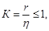
здесь r - показатель полноты сечения. Определяется из условия
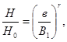
где H0 - максимальная глубина;
Н - глубина на расстоянии в от уреза, определяющая величину Fсв;
B1 - полуширина русла;
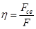
Рекомендуемые способы выправления
При выправлении русла в целях предотвращения заторообразования, желательно применение запруд, продольных дамб, берегоукреплений и других аналогичных сооружений, которые создают плавную трассу без отдельных выступающих элементов, препятствующих движению льдин, в противном случае возникает опасность образования заторов.
Применение поперечных сооружений, являющихся более дешевыми и, в ряде случаев, более эффективными в отношении влияния на руслоформирующие процессы, допустимо только у выпуклых берегов, причем сооружения должны быть ориентированы в направлении по течению реки.
Гребни сооружений должны быть подняты выше уровня ледохода, вследствие чего лицевые откосы продольных дамб крепления берегов, головы полузапруд, подверженные воздействию движущихся масс льда должны иметь надлежащее крепление.
Отмеченные требования в ряде случаев противоречат таковым, обеспечивающим оптимальные условия для эффективного выправления русла в интересах судоходства, а, кроме того, приводят к существенному увеличению единовременных капиталовложений. Вследствие указанного, на участках рек, где проведение выправительных работ в интересах судоходства не требуется, а возведение постоянных сооружений исключительно для предотвращения заторов экономически не оправдывается или приводит к ухудшению судоходных условий в сравнении с бытовыми, может оказаться целесообразным возведение временных ледовых сооружений.
В тех случаях, когда возведение выправительных сооружений необходимо как в целях предотвращения заторов, так и для улучшения судоходных условий, может оказаться целесообразным возведение смешанных постоянных и ледовых сооружений. Причем первые возводятся в соответствии с требованиями углубления русла для судоходства, а вторые - исходя из требований пропуска льда. Например, поперечное сооружение размещается в соответствии с судоходными требованиями, а продольные ледовые сооружения возводятся так, что создают благоприятные условия для пропуска льда при ледоходе.
Возведение постоянных сооружений традиционной конструкции осуществляется способами, изложенными в работе [44].
Возведение временных ледовых сооружений осуществляется в зимнее время посредством их постепенного послойного намораживания (глава V, § 1).
Авиация может быть широко использована при организации борьбы с заторами и зажорами и во многих случаях является незаменимым средством.
С помощью авиации может производиться:
а) разведка ледовой обстановки на длительном протяжении реки в предпаводочный период и период ледохода. Разведка может проводиться как путем визуального наблюдения, так и с применением аэрофотосъемки;
б) доставка людей, оборудования и материалов, необходимых для производства подрывных работ, как ледяного покрова, так и при ликвидации образовавшегося затора;
в) ликвидация заторов путем их бомбардировки с воздуха;
г) разрушение ледяного покрова бомбардировкой при проведении предупредительных мер борьбы с заторами.
Авиаразведка является наиболее оперативным средством при выяснении ледовой обстановки на главных реках бассейна на значительном протяжении. Особенно авиаразведка незаменима в тех случаях, когда точное место образования затора заранее определить трудно. Картограмма авиаразведки льда (составленная на основе схемы или крупномасштабной карты реки) является одним из основных оперативных документов при назначении наиболее рациональных мер борьбы с заторами.
Облет реки с целью авиаразведки ледовой обстановки желательно вести сверху вниз по течению. Наиболее предпочтительная скорость полета 100 - 140 км/час при высоте 400 - 600 м. При этих условиях легче составить представление о состоянии процесса вскрытия и общей ледовой обстановке.
Облет сверху вниз по течению на высоте 200 - 250 м дает возможность детально рассмотреть ледовую обстановку на отдельных участках реки. На участках скопления торосистого льда следует проводить полеты поперек реки с целью определения движения торосистого нагромождения и положения шуговой дорожки.
В целях оценки ледовых условий и предсказания возможности образования заторов в тех местах где они образуются из года в год (устьевые и подпорные заторы), целесообразно производить аэрофотосъемку ледовой обстановки в районе образования затора и на вышерасположенных участках, начиная с момента первых подвижек льда.
Анализ такого рода фотоматериалов за достаточно длительный ряд лет дает большие возможности познания законов заторообразования в изучаемом районе реки и поможет разработать детальные схемы борьбы с заторами в различных условиях, каждого года.
Более детальные обследования непосредственно на изучаемом заторном участке могут быть проведены с помощью вертолетов. Такие обследования дают подробные сведения об особенностях процесса вскрытия и заторообразования в данном створе.
Вертолеты желательно использовать и для наземной разведки льда, придав их экспедиционному отряду, направленному в район ожидаемого образования затора, где вертолеты могут использоваться для перемещения отряда вслед за кромкой льда, а также для проведения обычного комплекса наблюдений (за характеристиками ледяного покрова, размерами льдин, подныриванием их под кромку и т.п.).
При проведении всех видов авиаразведки ледовой обстановки на реках с целью борьбы с заторами в качестве наблюдателей необходимо использовать специалистов-гидрологов местных подразделений Гидрометслужбы.
Авиаразведку льда следует проводить согласно наставлению ГУ ГМС [27].
Взрывные работы, производимые на реке, наиболее оперативно могут быть проведены при использовании вертолетов.
При проведении предупредительных мер борьбы с заторами (очищении от ледяного покрова значительных участков рек с целью создания условий беззаторного пропуска льда) бывает необходимо иногда произвести подрыв льда на значительном протяжении реки одновременно. Осуществить это возможно при использовании вертолетов для доставки людей, оборудования и взрывчатки на пункты, через которые проходит трасса взрывов. Вывоз людей и переброску их на новые места также удобнее осуществлять с помощью вертолетов.
Наиболее эффективным средством ликвидации затора часто является его подрыв зарядами, располагаемыми в определенных местах его тела. Производство работ подобного рода сопряжено с опасностью для жизни, так как масса затора может находиться в состоянии неустойчивого равновесия и затор может прорваться в любое бремя, особенно после произведенных взрывов, на первый взгляд не давших результатов. В этих случаях единственным средством повторного заложения зарядов и своевременной эвакуации персонала может служить вертолет. Обычно подобного рода работы выполняются бригадой из 2 - 3 человек, высаживаемых в голове затора вместе с буровым оборудованием и взрывчаткой. После заложения зарядов, команда подрывников на вертолете эвакуируется в безопасное место. При производстве взрывов вдоль затора могут быть высажены одновременно несколько бригад.
Места заложения зарядов в тело затора можно определить путем визуальной оценки. Подобного рода наблюдения, особенно при образовании заторов на крупных реках, можно произвести лишь с помощью вертолетов. Также путем облета на вертолете оценивается эффективность произведенных взрывов, если они не разрушили затор, и определяются места расположения новых зарядов.
Бомбардировка заторов с воздуха отличается от других способов разрушения заторов возможностью быстрой организации и проведения, связанными с мобильностью авиации.
Бомбометание, как средство уничтожения затора, может быть безусловно рекомендовано на ранних стадиях образования затора. Работа организуется по схеме, предусматривающей непрерывное барражирование самолетом участка реки, где ожидается образование затора, и немедленный вызов бомбардировщиков, как только начнет намечаться затор. Эффекта можно добиться только в случае образования затора в дневное время суток. Бомбометание на ранней стадии образования затора не следует применять при первых подвижках, когда ниже по течению еще существует ледяной покров.
Бомбометание с воздуха с целью ликвидации уже образовавшегося и уплотнившегося затора мало эффективно, его следует применять в исключительных случаях, при катастрофических подъемах заторного уровня и невозможности принятия других мер в короткие сроки. Это обусловливается тем, что при сравнительно малой ширине реки, в особенности, если по берегам ее, как это часто бывает, много населенных пунктов, сбрасывание бомб значительного веса с современных машин, обладающих большими скоростями, является задачей чрезвычайно трудной и не безопасной в отношении сохранности населенных пунктов. На реках большой ширины бомбометание может быть эффективно лишь при применении бомб большого веса, причем в массовом количестве, чтобы одновременно воздействовать на значительную часть затора. Только в этом случае может быть получен заметный эффект. Вместе с тем известно, что чем большего веса бомбы сбрасываются, тем с большей высоты должна производится эта операция и тем меньше точность попадания. Эффект же может быть достигнут лишь в том случае, если бомбы попадут в наиболее напряженные зоны затора. Применение ограниченного количества малых бомб, как показывает опыт, практически не дает никаких результатов.
Применяя бомбометание с целью разрушения заторов, следует знать, что далеко не всякий затор может быть разрушен этим способом. Если затор образовался в зоне выклинивания кривой подпора водохранилища при наличии ледяного покрова в самом водохранилище, бомбометание не может дать результатов, так как не будет содействовать созданию условий продвижения и рассосредоточения масс льда.
Малоэффективна борьба путем бомбометания устьевых заторов. Для этого типа заторов необходимо предварительно освободить от льда рукава дельты и взломать береговой припай, что позволит принимать скопившийся в заторе лед.
При возникновении руслового затора у кромки ледостава необходимо вначале разрушить ледостав на нижерасположенном от затора участке. При этом бомбометание необходимо производить снизу вверх, начиная от места, где образование затора не нанесет большого ущерба. После проведения такого бомбометания можно приступать к взрыванию головной части затора, если он к тому времени не прорвется.
При образовании руслового затора на широкой реке (при отсутствии кромки ледостава) нижний участок заторного тела уплотняется и удерживает весь затор.
Ликвидация этого наиболее уплотненного участка с помощью бомбометания приводит обычно к прорыву такого затора.
Порядок работ по разрушению затора бомбометанием такой же, как и при разрушении затора взрывами. Бомбить затор начинают лишь после того, как ниже затора образовался участок воды, свободный ото льда. Бомбометание сосредоточивается до одной продольной линии с целью создания канала. Трасса, на которую должны падать бомбы, закрепляется указателями в виде бочек, которые сбрасываются с самолета, или полосами зачернения. Бомбометание производится не по всей площади затора, а сосредоточивается только в пределах трассы от нижней кромки затора вверх по реке.
Самолет заходит на трассу с нижней части затора и сбрасывает первую бомбу примерно на расстоянии 50 м от нижней кромки затора, а другие последовательно друг за другом примерно на таком же расстоянии. Если движения льда на трассе, подвергнутой бомбометанию, не происходит, бомбометание повторяют, сокращая расстояние между сбрасываемыми бомбами.
С появлением движения льда или ледохода работы по бомбометанию прекращаются и затем снова возобновляются в вышеуказанном порядке после остановки льда.
Корректировка бомбометания ведется наблюдателем, располагающимся на высоком месте. Наблюдатель следит за ледовой обстановкой в районе заторе и ведет строгий учет сброшенных и взорвавшихся авиабомб. Сведения передаются летчику по походной рации. При образовании русловых заторов большой протяженности на достаточно узких реках, где распор в берега в каждом сечении способен выдержать большие гидродинамические нагрузки и лед не уплотнен, применение бомбометания практически не может дать результатов. Однако в некоторых случаях бомбометание, произведенное сверху вниз по длине затора, способствуют образованию канала в заторе, по которому вода устремляется из верхнего бьефа затора в нижний, способствуя размыву затора и снижению заторного уровня.
Если по длине реки образовалось несколько следующих друг за другом заторов, ликвидация их с помощью бомбометания должна вестись начиная с нижнего, сообразуясь со степенью опасности каждого из заторов. В тех случаях, когда верхний затор менее опасен, не следует ускорять его прорыв, чтобы не вызвать усиления затора, расположенного ниже по течению.
Бомбометание лучше всего производить в часы наибольшей солнечной радиации, т.е. с 12 до 15 часов местного времени, так как под влиянием радиации происходит таяние межкристаллических прослоек льда и снижается его прочность. При отрицательной температуре воздуха в результате смерзания льда затора действие взрыва будет значительно менее эффективным. Бомбометание, кроме того, желательно приурочивать к моменту увеличения расхода воды, что будет способствовать уменьшению устойчивости заторных масс.
Наиболее сложной задачей применения бомбометания является определение оптимальной мощности бомб. Известно, что в силу пластичности льда взрывы часто пробивают отверстия в нем той или другой величины, не нарушая целостности рядом расположенных льдин. Если при этом еще и неудачно попадание бомбы, то бомбометание принесет мало пользы.
Вопрос о воздействии взрывов бомб на тело затора в зависимости от различных условий в самом заторе и конструкции и мощности бомб изучен далеко не достаточно. Имеющийся опыт весьма невелик, разобщен и часто вообще не зафиксирован. Можно предположительно считать, что для ликвидации затора в процессе его зарождения следует применять бомбы меньшей мощности. Применение мелких бомб при ликвидации сформировавшегося затора практически не дает результатов. В этом случае необходимо применять бомбы весом в 250 - 500 кг.
При решении вопроса о мощности бомб необходимо учитывать не только силы сопротивления сдвигу затора, которые зависят от характера русла и массы нагроможденного льда, но и такие факторы, как близость населенного пункта, сооружений и т.п.
Разрушение ледяного покрова бомбометанием как предварительное мероприятие по борьбе с заторами следует запретить. В силу пластичности льда цельный ледовый покров слабо разрушается взрывами, увеличение зарядов дает при этом малый эффект. Если при этом разрушение проводится на большом участке реки, то кроме гибели рыбы ни к чему не приведет.
Одним из способов предупреждения и борьбы с заторами и зажорами является применение взрывов. Появление мощных водоустойчивых и менее опасных в обращении взрывчатых веществ, а также современной техники расширяет возможности этого способа как в период подготовки к ледоходу, так и в период ликвидации образовавшихся заторов. Этому же способствуют незначительные капитальные затраты и простота средств механизации.
Взрывные работы могут применяться:
1) для проведения предупредительных мероприятий, обеспечивающих беззаторный пропуск льда на данном участке реки;
2) для проведения предупредительных мероприятий по защите мостов и гидротехнических, сооружений в период ледохода;
3) для оперативной борьбы с заторами в момент их образования с целью немедленной ликвидации причин (больших полей, их первоначальных скоплений и т.п.);
4) для ликвидации уже сформировавшихся заторов;
5) для борьбы с зажорами льда.
Однако кажущаяся заманчивость использования взрывных методов не должна закрывать глаза на огромный вред, приносимый взрывами рыбному хозяйству страны (особенно в последние годы в связи с общим сокращением рыбных запасов и по целому ряду других причин). Исходя из этого, применение взрывов для работ по предупреждению заторов (очищение ото льда значительных площадей, создание майн, каналов и т.п.) следует считать нецелесообразным и запретить в законодательном порядке.
Только в исключительных случаях проведение таких работ должно вестись по разрешению вышестоящих организаций. К таким случаям могут относиться случаи, когда заранее можно видеть, что вероятность образования затора в данном году велика, и он может принести убытки, значительно превышающие убытки, которые может потерпеть рыбное хозяйство.
В настоящем разделе освещаются вопросы, связанные с применением взрывов для дробления льда, ликвидации заторов и зажоров. При этом основное внимание уделяется специфике таких работ, учитывая, что общие вопросы производства взрывных работ освещены в целом ряде специальных нормативных документов и руководств (имеются в виду вопросы бурения, особенностей ВВ, технологии приготовления зарядов, оснащения подрывных команд аппаратурой, инструментом и т.п.).
В главе I отмечалось, что взрывы применяются при проведении предупредительных мероприятий по борьбе с заторами, заключающихся в своевременном освобождении от ледяного покрова значительных участков реки в затороопасных районах. Кроме того, взрывные работы применяются и для создания условий, которые обеспечивают целостность и безопасность мостов и гидротехнических сооружений и предупреждают образование заторов в створах этих объектов. Поскольку эти цели часто преследуются одновременно, то в данной главе кратко рассматривается и защита сооружений от ледохода.
Организация подготовительных работ по защите сооружений от ледохода
Взрывные работы рекомендуется начинать с первыми признаками таяния снега и подъема воды. При расчете веса зарядов для рыхления льда в пойменных озерах и стоячих водоемах удельный расход ВВ принимается равным 0,5 кг/м3.
В некоторых случаях при большой толщине ледяного покрова для защиты от ледохода сооружений образуют майны. Размеры майн зависят главным образом от ширины и толщины ледяного покрова, длины его подвижек, глубины береговых участков реки, сопротивляемости сооружения давлению льда.
Так, на средних реках длина майны ниже моста должна быть не менее ширины ледяного покрова, а выше моста - в два раза больше. На малых реках общая длина майн должна равняться 5 - 7-кратной ширине ледяного покрова. В особых случаях длину майны выше моста доводят до 500 м и больше. Ширину майн у мостов на малых реках принимают равной ширине ледяного покрова.
Учитывая трудоемкость работ по затоплению льда при отсутствии закраины или полыньи, майны обычно образуют за счет выброса льда на поверхность ледяного покрова, используя для этого массовые взрывы зарядов. Максимальный выброс льда достигается при однорядном расположении зарядов на расстоянии друг от друга на 1,5 - 2,0 м глубины опускания заряда и удельном расходе ВВ равном 0,9 - 1,5 кг/м3. Однако в этом случае ширина образуемой майны, как правило, не превышает 15 м. Для получения более широких майн применяют 2 - 3-рядное расположение зарядов.
В первом случае заряды располагают друг против друга, во втором - заряды среднего ряда располагают в шахматном порядке по отношению к зарядам крайних рядов. При двухрядном взрывании льда применяют подводные заряды одинакового веса. При трехрядном взрывании льда для получения более чистой майны вес подводных зарядов среднего ряда принимают в 1,5 - 2 раза больше веса зарядов крайних рядов. Все заряды взрываются одновременно.
При образовании более узких майн, а также при создании лунок и разбивке отдельных льдин применяют наружные и внутренние заряды. Веса наружного и внутреннего зарядов в зависимости от толщины льда приведены в табл. 6.
Размеры льдин после раскалывания ледяного покрова должны обеспечивать свободный проход их под пролетами моста. Ледяной покров вблизи гидротехнических сооружений дробят по всей ширине водоема.
|
Вес зарядов, кг |
||
|
внутренних |
наружных |
|
|
0,4 - 0,5 |
0,2 |
1,2 |
|
0,5 - 0,6 |
0,3 |
1,5 |
|
0,6 - 0,7 |
0,4 |
1,8 |
|
0,7 - 0,8 |
0,5 |
2,2 |
|
0,8 - 0,9 |
0,6 |
2,6 |
|
0,9 - 1,0 |
0,8 |
3,2 |
|
1,0 - 1,1 |
1,0 |
3,6 |
|
1,1 - 1,2 |
1,2 |
4,2 |
|
1,2 - 1,3 |
1,4 |
5,0 |
Площадь ледяного покрова, подлежащая раскалыванию, зависит от толщины льда, характера ледохода на данной реке, надежности защищаемого сооружения и т.д. Раскалывание ледяного покрова служит профилактическим мероприятием против напора больших ледяных полей на гидротехнические сооружения и для предупреждения образования заторов.
Раскалывание ледяного покрова производят либо взрывами зарядов, расположенных рядами (взрывами в зажиме), либо постепенным откалыванием отдельных льдин. В этих случаях взрывные работы проводят в направлении, противоположном течению воды, а при отсутствии течения - с подветренной стороны.
Для снижения давления, оказываемого ледяным покровом на плохо защищенные сооружения, кроме сколки льда вокруг них, используют смягчающую ледяную подушку (защитную полосу из раздробленного льда), которая, уплотняясь в момент подвижек ледяного покрова, воспринимает на себя значительную часть ее давления.
Ледяную подушку образуют взрывами подводных зарядов, расположенных в шахматном порядке. Расстояние между зарядами должно быть таким, чтобы между майнами оставались небольшие перемычки льда, которые будут разрушены при его подвижке.
Проведение взрывных работ по дроблению льда с целью предупреждения заторов
С целью очищения ото льда больших участков рек проводятся взрывные работы при помощи взрывов зарядов, опускаемых под лед. Взрывы ведутся против течения обычно сериями, с тем, чтобы отколовшиеся льдинки свободно уносились вниз.
Вес подводного заряда определяется по формуле:
Q = KW3
где Q - вес заряда, кг;
К - удельный расход ВВ, кг/м3;
W - расчетная линия сопротивления, равная глубине опускания заряда в воду, м.
Удельный расход ВЗ изменяется от 0,3 до 1,5 кг/м3 и зависит от диаметра майны, необходимой степени дробления в майне льда и его разброса.
При К = 0,3 кг/м3 майна не образуется, взрывом производится раскалывание льдин на отдельные куски. При К = 0,5 кг/м3 образуется майна диаметром в 3,5 раза больше глубины опускания заряда в воду. При К = 0,9 кг/м3 образуется майна диаметром в 4 раза больше, чем глубина опускания. В этом случае майна довольно хорошо очищена от битого льда. Наименьшая стоимость работ получается при взрывании зарядов на глубине 1,5 - 3 м.
Глубина опускания заряда W увеличивается с повышением толщины льда.
Расстояние между зарядами зависит от диаметра образуемой майны, условий взрывания и характера выполняемой работы. Обычно расстояние колеблется от 5 до 15 W.
При раскалывании льда (или образовании майны непосредственно у объекта) взрывами в «зажиме» расстояние между зарядами принимают равным 5 W, а при наличии закраин или полыней и производстве взрывов без «зажима» расстояние между зарядами может быть увеличено до 15 W.
Веса зарядов при различной толщине льда и различном расстоянии между ними приведены в табл. 7.
|
Глубина погружения заряда, м |
Расстояние между зарядами, м |
Вес заряда, кг |
|
|||
|
К = 0,5 кг/м3 |
К = 0,9 кг/м3 |
|||||
|
5 W |
15 W |
|
||||
|
0,3 - 0,4 |
1,4 |
7,0 |
21 |
1,4 |
2,5 |
|
|
0,4 - 0,5 |
1,5 |
7,5 |
22,5 |
1,7 |
3,0 |
|
|
0,5 - 0,6 |
1,6 |
8,0 |
24 |
2,0 |
3,6 |
|
|
0,6 - 0,7 |
1,7 |
8,5 |
25,5 |
2,5 |
4,4 |
|
|
0,7 - 0,8 |
1,9 |
9,5 |
28,5 |
3,4 |
6,2 |
|
|
0,8 - 0,9 |
2,1 |
10,5 |
31,5 |
4,6 |
8,3 |
|
|
0,9 - 1,0 |
2,3 |
11,5 |
34,5 |
6,1 |
10,9 |
|
|
1,0 - 1,1 |
2,5 |
12,5 |
37,5 |
7,8 |
14,0 |
|
|
1,1 - 1,2 |
2,7 |
13,5 |
40,5 |
8,8 |
17,7 |
|
|
1,2 - 1,3 |
2,9 |
14,5 |
43,5 |
12,2 |
21,9 |
|
|
1,3 - 1,5 |
3,3 |
16,5 |
49,5 |
18,0 |
32,3 |
|
Подводные заряды не рекомендуется опускать под лед через трещины, промоины и между стыками льдин, так как к ним опасно подходить. Кроме того, уменьшается площадь ледяного покрова, раскалываемого взрывами, из-за того, что воздействие взрыва распространяется в определенной мере на уже разрушенный ледяной покров. Чаще всего заряд опускают под лед на крепком шпагате, один конец которого привязывают к самому заряду, а другой - к перекладине, уложенной поперек лунки. Заряд можно опускать на шесте. Для этого заряд привязывают к концу шеста; второй конец шеста прикрепляют к перекладине. При опускании заряда огнепроводный шнур в необходимых случаях выводится на поверхность. При этом шнур в нескольких местах привязывают к шпагату или шесту. Опускание зарядов на огнепроводном шнуре запрещается.
Кроме проведения взрывных работ, направленных на полное очищение участка русла ото льда для приема прибывающего сверху льда, в целях оперативного вмешательства в процесс заторообразования взрывные работы желательно проводить в наиболее неблагоприятных, с точки зрения возникновения затора, местах выше по течению. К таким местам относятся:
1) участок с большой толщиной льда. Лед следует подорвать у берегов (в местах распора в берега) и несколько ниже этого участка;
2) крутой поворот русла. Лед следует подорвать у берегов в пределах поворота;
3) сужение русла. Лед следует подорвать вдоль берегов на участке сужения и в пределах последующего расширения;
4) участок с чередованием перекат-плес. Лед следует подорвать у берегов на плесовом участке ниже переката;
5) остров. Лед следует подорвать у берегов и у верхнего и нижнего концов острова;
6) песчаная коса. Лед следует подорвать у берегов в пределах косы, а также на самой косе.
Как отмечалось выше, борьба с заторообразованием путем принятия предупредительных мер значительно эффективнее разрушения уже образовавшихся заторов. Это относится также и к методу взрывов.
Поэтому, предпочтительней не допускать заторов, ликвидируя ах в момент образования. Для этого организуются специальные подвижные группы, которые взрывают большие поля, первоначальные скопления льда и т.п.
Ледяные поля раскалывают взрывом как подводных, так и наружных зарядов. В начале ледохода, когда лед идет сплошной массой, к большим льдинам невозможно подплыть. В этом случае их раскалывают взрывами зарядов, бросаемых с берега из укрытия, с подвесных легких мостков, устраиваемых на стальных тросах между крутыми берегами, с вертолетов. Для защиты взрывников от разлета осколков льда у мест бросания зарядов устраивают прочные укрытия.
Вес бросаемого заряда не должен превышать 2 кг. С большим эффектом и меньшей опасностью для взрывников льдина может быть расколота взрывом подводного заряда при несплошном ледоходе. При этом заряды рекомендуется бросать в воду перед льдиной, чтобы взрыв произошел после наплывания средней части льдины на заряд. Если к льдине можно либо подплыть на лодке, либо (по возможности) подойти по льду с применением досок или прочных узких деревянных лестниц, ее можно взорвать опущенным под воду зарядом. Запрещается работать при этом на слабом льду одному взрывнику. В этом случае другой взрывник должен находиться на расстоянии 3 - 4 м и иметь наготове спасательные средства. При раскалывании плывущих льдин (также при ликвидации заторов) взрывнику за один прием разрешается взрывать только по одному заряду.
Примерные веса подводных зарядов для раскалывания льдин средней мощности (толщиной около 60 см) приведены в табл. 8.
|
10 - 15 |
15 - 20 |
20 - 30 |
30 - 40 |
40 - 60 |
50 - 70 |
|
|
Вес заряда, кг |
0,5 |
1 |
2 |
4 |
6 |
12 |
Для раскалывания взрывом льдины размером более 70 - 80 м вес подводных зарядов должен быть не менее 15 - 20 кг. Раскалывание льдин взрывами нескольких подводных зарядов допускается при достаточной их прочности.
При раскалывании льдин наружными зарядами безопасные расстояния между ними приведены в табл. 9.
|
0,5 - 0,7 |
0,7 - 1,0 |
1,0 - 2,0 |
2,0 - 3,0 |
3 - 5 |
5 - 7 |
7 - 10 |
|
|
Расстояние между зарядами, м |
3 |
4 |
6 |
7 |
9 |
11 |
13 |
Рекомендуемые веса наружных зарядов в зависимости от толщины кристаллического льда приведены в табл. 10.
|
0,2 - 0, 3 |
0,3 - 0,4 |
0,4 - 0,5 |
0,5 - 0,6 |
0,6 - 0,7 |
|
|
Вес наружного заряда, кг |
1,2 |
1,6 |
2,0 |
2,4 |
3,0 |
|
Толщина льда, м |
0,7 - 0,8 |
0,8 - 0,9 |
0,9 - 1,0 |
1,0 - 1,2 |
1,2 - 1,5 |
|
Вес наружного заряда, кг |
3,7 |
4,5 |
6,0 |
7,0 |
10,0 |
При взрывании заторов следует помнить, что прорыв затора может быть внезапным, поэтому необходимо наблюдать за подвижкой льда и передвигаться по нему с соблюдением всех мер предосторожности.
Заряды закладываются в места, где течение воды и ветер способствуют выносу взорванного льда. Затор ликвидируют постепенным дроблением его в направлении, противоположном течению воды.
Успех работы зависит от правильного определения места заложения зарядов в наиболее уплотненной головной части затора.
При ликвидации заторов для определения примерного веса зарядов можно пользоваться данными, приведенными в табл. 11.
Очень часто на относительно мелких реках лед нагромождается до 3 - 4 м над уровнем воды и доходит в некоторых местах до дна. Такие заторы ликвидируются производством следующих друг за другом взрывов мощных зарядов ВВ (20 - 30 кг), располагаемых по середине затора вдоль по течению реки. В случае устойчивости затора последующие заряды закладываются на место взорванных с предварительной расчисткой от битого льда.
|
Вес заряда, кг |
||
|
при массовом взрыве и расстоянии между зарядами 5 W |
при взрыве одиночных зарядов или при массовом взрыве и расстоянии между зарядами 10 W |
|
|
1,0 - 5,0 |
3 |
15 |
|
1,5 - 2,0 |
8 |
40 |
|
2,0 - 2,5 |
15 |
80 |
|
2,5 - 3,0 |
25 |
130 |
|
3,0 - 3,5 |
40 |
200 |
|
3,5 - 4,0 |
60 |
300 |
Для ускорения работ по ликвидации мощного затора применяют заряды весом не менее 30 - 40 кг, которые опускаются в воду между льдинами на веревке с петлей.
При наличии вмерзшего в лед сплавного леса следует несколько увеличить веса зарядов или уменьшить расстояние между ними. Для одновременного взрыва нескольких зарядов применяется детонирующий шнур. Опускать заряды на детонирующем шнуре без поддерживающих приспособлений запрещается.
Некоторые способы подрыва заторов освещены ниже.
Узкие реки (ширина реки до 200 м)
Если на охраняемом участке реки начал формироваться затор путем подныривания льдин или торошения льда у кромки неподвижного ледяного покрова, то следует подорвать ледяной покров. Разрушать ледяной покров следует снизу вверх по течению, начиная от места, где образование затора не нанесет ущерба.
Если затор уже сформировался и остается на месте, несмотря на то, что ледяной покров ниже затора ликвидирован, следует подорвать лед на участке головной части затора в нескольких местах вдоль берега (в месте распора льда) или же по фарватеру реки.
В случае образования затора распором на берега следует подорвать ледяные поля или лед у нижнего края затора а, если после этого затор останется на месте, следует произвести серию взрывов вдоль затора. Подрывать лед по длине затора, сформировавшегося на узкой реке, следует сверху вниз по течению либо одновременно по длине затора. Это способствует образованию в заторе канала, по которому вода устремляется с верхнего бьефа в нижний бьеф затора. В этом случае заторный уровень воды постепенно снижается, а затор размывается.
При большой протяженности затора (свыше 15 - 20 км) на узкой реке подрыв льда затора, как уже отмечалось, мало эффективен. Однако в некоторых случаях взрывы льда, сделанные одновременно по длине затора (либо сверху вниз по течению), могут принести пользу.
Широкие реки (ширина свыше 200 м)
При формировании затора льда путем подныривания или торошения у неподвижной кромки льда на охраняемом участке широкой реки следует подорвать ледяной покров ниже затора. Подрывать ледяной покров следует в такой же последовательности, как и на узкой реке.
Если затор остается на месте (после ликвидации ледяного покрова ниже затора) и уплотняется, следует произвести серию взрывов вдоль берега (в местах распора льда) либо на середине река в пределах нижней, наиболее уплотненной части затора. Взрывы желательно произвести одновременно.
Следует заметить, если затор уже сформировался, то во многих случаях нет необходимости подрывать ледяной покров перед затором, тем более, если он не является причиной образования затора. Успешный подрыв нижней, наиболее уплотненной части затора приводит обычно к прорыву затора. Торосистые скопления льдин, двигаясь вниз по течению, взламывают ледяной покров в пределах однородного (по морфологии русла) участка реки. У преграды, которая может служить причиной заторообразования, такое скопление льдин обычно останавливается и вновь образуется затор.
Взрывы льда следует производить в часы наибольшей солнечной радиации, т.е. с 12 до 15 часов по местному времени, так как при положительной температуре под воздействием радиации происходит таяние межкристаллических прослоек льда.
В начальный период формирования зажоров места, где возникает опасность их образования, сотрясают взрывами зарядов, бросаемых с берега, лодок, ледорезов и т.д. Такие взрывы обеспечивают безостановочный пропуск внутриводного льда, который часто задерживается у берегов. Эти места необходимо периодически осматривать для ликвидации заберегов и пропуска остановившегося внутриводного льда.
Зимой зажоры чаще формируются под ледяным покровом, и ликвидировать их в момент формирования можно взрывами подледных зарядов, опускаемых через поверхностный ледяной покров. Заряды следует закладывать продольными рядами так, чтобы в результате сразу образовался проход для воды по всей длине зажора.
Зажоры необходимо ликвидировать своевременно, так как после сформирования их очень трудно разрушить. Известны случаи расхода ВВ на подрыв одного зажора до 10 т и более, а некоторые зажоры практически не поддаются действию взрывов.
В настоящее время при проведении взрывных работ успешно применяются вертолеты, которые используются как для доставки команды и ВВ, так и для непосредственной ликвидации заторов.
Взрывные работы с помощью вертолета МИ-4 проводятся с выходом взрывников из вертолета на лед и непосредственно с борта вертолета. При работе взрывников по дроблению льда вертолет находится на режиме висения.
При первом способе (с выходом взрывников) возможна укладка и взрыв как одиночных, так и групповых зарядов. В этом случае взрывник выходит на лед, укладывает заряд или опускает его под лед, возвращается в вертолет, поджигает огнепроводный шнур и бросает его на лед, после чего вертолет перемещается к следующему заряду. Длина первого огнепроводного шнура при этом выбирается такой, чтобы время его горения обеспечивало возможность укладки и поджога нескольких зарядов и удаления вертолета на безопасное расстояние.
Время горения первого шнура контролируется по секундомеру и контрольной запальной трубкой.
Во время работы взрывник и бортмеханик надевают надувные жилеты и пристегиваются страховочными поясами к вертолету. Взрывник, выходящий на лед, прикрепляется к борту вертолета фалой длиной 10 - 15 м. Дверь кабины вертолета предварительно снимается на земле. Бортмеханик следит за действиями взрывника и держит связь по СПУ с командиром вертолета.
Во втором случае, после зависания вертолета над затором взрывник по команде опускает заряд с подсоединенным детонирующим шнуром на веревке на лед или воду между льдин. Уложив заряд, взрывник подсоединяет к концу детонирующего шнура зажигательную трубку, поджигает ее и опускает на лед. Во всех случаях на борту вертолета должно находиться не менее двух взрывников, один из которых является руководителем.
Вертолет должен быть оборудован грузовой лебедкой и спасательной лестницей и, кроме того, на нем должны быть страховочные пояса, надувные спасательные жилеты и аптечка.
При работе с вертолетом следует помнить, что увеличение веса заряда приводит к увеличению опасной зоны по действию ударной воздушной волны для вертолета, а значит и увеличению длины зажигательной трубки.
Предельная длина зажигательной трубки - 10 м, это соответствует 15 минутам горения. Учитывая, что за это время взрывнику необходимо поджечь несколько зарядов, а затем вертолету удалиться на максимальное расстояние, вес зарядов, взрываемых одновременно, должен ограничиваться весом ВВ, переносимым одним взрывником.
Определение расстояния, безопасного по действию воздушной волны, производится по формуле:
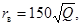
где rв - безопасное расстояние, м;
Q - вес заряда ВВ, кг.
Размеры зоны, безопасной по действию воздушной волны на человека, устанавливаются по формуле:
Эта формула используется только в тех случаях, когда по условиям работ необходимо максимальное приближение взрывника к месту работ; в нормальных условиях полученный по формуле результат следует увеличить в 2 - 3 раза.
Работы проводятся в строгом соответствии с «Техническими правилами ведения взрывных работ» и «Едиными правилами безопасности при ведении взрывных работ».
Основное преимущество взрывных работ с помощью вертолета по сравнению с прочими методами состоит в возможности укладки зарядов практически в любое место затора. По сравнению с бомбометанием этот способ отличается значительно большей точностью раскладки зарядов и, следовательно, большей эффективностью взрывных работ.
Строительство гидроузлов на реках изменяет их естественный режим. При этом в зависимости от схемы производства работ могут возникать условия, способствующие образованию заторов. Заторы в районе строительства гидроузла могут привести к затоплению котлованов и недостроенных сооружений, поэтому должны предусматриваться мероприятия, не допускающие этого.
Опыт возведения гидроузлов на реках с тяжелыми ледовыми условиями говорит о том, что беззаторный пропуск льда может быть осуществлен при соблюдении необходимых мер режимного и инженерного характера. Настоящая глава составлена на основе обобщения этого опыта. Одновременно в ней рассматриваются и вопросы пропуска льда через готовые сооружения так как в их состав могут входить такие же ледопропускные элементы, как и в период возведения.
Проектирование гидроузлов на реках, где в зимний период образуется устойчивый ледяной покров, следует производить с учетом пропуска или задержания льда перед сооружениями в строительный и эксплуатационный периоды.
При необходимости пропуска льда через недостроенные или эксплуатируемые сооружения они должны иметь ледосбросные отверстия, обеспечивающие беспрепятственный сброс льда.
Выбор типа и габаритных размеров ледосбросных сооружений должен производиться с учетом принятой конструкции гидроузла, схемы его возведения на основе изучения ледового режима реки, использования опыта работы сооружений, находящихся в подобных условиях, и рекомендаций настоящей главы.
В качестве ледосбросных отверстий могут рассматриваться открытые пролеты, донные отверстия, береговые траншейные водосбросы, суженные участки русел, туннели и т.д.
Створ гидроузла, через сооружения которого в строительный или эксплуатационный периоды предполагается обеспечивать пропуск льда, желательно выбирать так, чтобы выше и ниже сооружений имелся прямой и длинный участок реки без островов, удаленный от мест заторообразования. При наличии порогов в районе предполагаемого строительства гидроузла створ гидроузла целесообразно наметить за порогами. Это значительно облегчит условия пропуска льда через сооружения в строительный период, так как к сооружениям будет подходить лед, измельченный на порогах.
В непосредственной близости за гидроузлом нежелательно устройство мостовых переходов с пролетами малой ширины, а также отсыпок в русле или вдоль берегов, приводящих к сужению русла. В противном случае необходимо предусматривать мероприятия по беспрепятственному пропуску льда и в нижнем бьефе.
В случае если гидроузел располагается в каскаде, то должна быть предусмотрена возможность с работки уровней воды на нижерасположенном гидроузле, что обеспечит ледотранзит за сооружениями. На вышерасположенном гидроузле целесообразно уменьшать пропуски воды в весенний период, что позволит дополнительно задержать на некоторое время вскрытие реки перед защищаемым гидроузлом и приведет к снижению толщины и прочности льда на этом участке, а значит и к обеспечению более благоприятных условий пропуска льда.
При компоновке сооружений гидроузла следует иметь ввиду следующие положения:
- ледосбросные пролеты следует располагать в пределах стрежня реки;
- при расположении гидроузла на изгибе реки, ледосбросные пролеты желательно располагать у вогнутого берега, к которому обычно направляется основная масса льда;
- в пределах ледосбросного фронта не следует устраивать пролеты или отверстия с резко отличной пропускной способностью, так как это приводит к неравномерному поступлению льда к сооружению и может вызвать длительные остановки льдин перед отверстиями или пролетами с меньшей пропускной способностью.
В стадии рабочих чертежей расположение ледосбросных отверстий должно подтверждаться гидравлическими исследованиями гидроузла на пространственных моделях.
При пропуске льда через недостроенные и эксплуатируемые сооружения в нижнем бьефе должен быть обеспечен поверхностный режим сопряжения во избежание разрушения льдом крепления русла за сооружениями. Если для создания поверхностного режима сопряжения в нижнем бьефе на водосливе устраивается носок, то необходима предварительная проверка в лабораторных условиях его сохранности при пропуске льда. В случае разрушения носка необходимо отказаться от его устройства и обеспечить надлежащее крепление русла реки за сооружением.
Ледосбросные отверстия сооружений в строительный период, а также в период эксплуатации, когда попуски воды при ледоходе неограниченны, могут быть перекрыты затворами различной конструкции, которые при пропуске льда должны быть открыты на полную высоту. Для ледосбросных отверстий с ограниченными попусками воды во все периоды рекомендуется применение опускных затворов или подъемных затворов с опускными клапанами. Маневрирование затворами ледосбросных отверстий при пропуске льда должно быть исключено. При невозможности полного исключения маневрирования необходима разработка комплекса мероприятий по обеспечению безаварийной работы затворов (усиление затворов с учетом возможной ледовой нагрузки, уменьшение толщины, прочности, скорости и размеров, подходящих к пролетам ледяных полей).
Глубина потока перед сооружениями, в пределах сооружений и за ними должна обеспечивать беспрепятственный пропуск льда и предохранить различные конструктивные элементы сооружения вдоль ледосбросного тракта от разрушения льдом. Возвышение низа различных эстакад, мостов, временных конструкций, установленных над ледосбросными пролетами, должно быть назначено с учетом возможного подхода к пролетам нагромождений льда и его перевертывания в пределах пролетов, но не менее 3 - 5 м (в зависимости от мощности ледохода).
Инженерные мероприятия по обеспечению условий пропуска льда через сооружения должны быть направлены на возможно более длительное задержание льда в верхнем бьефе, приводящее к снижению толщины и прочности льда и уменьшению его общего объема, и на более раннее вскрытие реки в нижнем бьефе в сравнении с верхним бьефом.
При рассмотрении вопросов пропуска льда через сооружения заданными являются:
а) тип и конфигурация ледосбросных сооружений назначаются с учетом принятой конструкции гидроузла;
б) гидравлические условия в пределах ледосбросного тракта (уровни и очертание водной поверхности, глубины потока и напор над гребнем водосливов, режим потока в нижнем бьефе и т.д.) устанавливаются по расчетным и лабораторным данным;
в) характеристики ледохода (толщина, скорость и размеры подходящих ледяных полей или скоплений заторного льда, интенсивность поступления льда и предполагаемый объем сброса льда) прогнозируется на основе предварительного изучения условий вскрытия реки за ряд лет;
г) прочностные характеристики льда назначаются на основе предварительных исследований в рассматриваемом районе. При отсутствии таковых приближенно принимается
Rи = Rсж = 45 т/м2,
Rи, Rсж - временные сопротивления льда на изгиб и сжатие.
При возведении гидроузлов с низкими (высота менее 25 м) бетонными плотинами пропуск льда может осуществляться через суженные русла, гребенки с порогом на уровне дна реки (низкий порог) или с высоким порогом (порог приподнят над дном реки). В эксплуатационный период на гидроузлах с низкими бетонными плотинами может осуществляться частичное или полное задержание льда (в зависимости от размеров водохранилища и скоростей течения в верхнем бьефе).
При возведении гидроузлов со средними (25 - 75 м) и высокими (более 75 м) бетонными плотинами на многоводных реках пропуск льда может осуществляться через суженные русла, гребенки с низким или высоким порогом, донные отверстия с порогом на уровне дна реки или с порогом, приподнятым над дном реки. В эксплуатационный период на гидроузлах со средними и высокими бетонными плотинами пропуск льда не предусматривается, так как создаваемые перед такими гидроузлами крупные водохранилища позволяют полностью задержать лед в верхнем бьефе.
При возведении гидроузлов с каменно-набросными плотинами пропуск льда может осуществляться через суженное русло или затопленную недостроенную каменную наброску, а в последующем через береговые траншейные водосбросы или тоннели. В эксплуатационный период на гидроузлах с каменно-набросными плотинами может осуществляться частичное или полное задержание льда в зависимости от размеров водохранилища и скоростей течения в верхнем бьефе.
При разработке схем пропуска льда необходимо учитывать конструкцию гидроузла, схему его возведения, особенности вскрытия реки. При этом следует стремиться к тому, чтобы ледосбросные сооружения обеспечивали условия, при которых возможно задержание льда на некоторый срок, что приведет к снижению его толщины и прочности, или образованию на подходе к ледосбросам повышенных уклонов водной поверхности, под влиянием которых происходит дробление подходящих ледяных полей на отдельные льдины.
Для суженных русел рек помимо общих положений учет условий пропуска льда сводится к назначению:
а) ширины сужения;
б) глубины в сужении;
в) высоты перемычек, ограждающих недостроенные сооружения;
г) оптимального профиля и конфигурации перемычек и мероприятий по защите их от разрушения льдом.
Ширина суженных русел из условия пропуска льда должна назначаться на основе изучения ледового режима реки с использованием опыта работы сооружений, находящихся в аналогичных условиях, и приниматься не менее 30 % ширины реки, занятой плывущим льдом в бытовых условиях.
Глубина потока по фарватеру сужения должна обеспечивать пропуск пакетов заторного льда и для многоводных рек с тяжелыми ледоходами должна быть не менее 5 - 6 м.
При уклонах водной поверхности, больших 0,007, на входе в суженные русла ледяные поля с размерами вдоль потока 50 м и более разламываются на отдельные полосы льда. Длину полос льда d, отделяющихся от ледяных полей на гидравлических перепадах при входе в суженые русла, можно определять по формуле
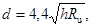
где d - размер полос льда в направлении вдоль потока, отделяющихся от ледяных полей на гидравлическом перепаде;
h - толщина льда.
При движении в пределах сужения полосы льда дробятся на отдельные льдины, размеры которых не превосходят 2d.
Высота перемычек, ограждающих недостроенные сооружения, при пропуске льда через суженое русло должна быть проверена на случай возможного повышения уровней в верхнем и нижнем бьефах за счет прорыва заторов на вышерасположенных участках реки или образования заторов за сужением.
В сужении, образованном перемычками котлована первой очереди, наибольшему воздействию льда подвергаются верховой оголовок, верховая и продольная перемычки.
При выборе профиля и материала верховой перемычки следует иметь ввиду, что перемычка подвергается интенсивному динамическому воздействию льда только при первых подвижках. В последующем, вследствие особенностей гидравлики, перед перемычкой образуется своеобразный буфер изо льда, защищающий ее от динамического воздействия ледяных, полей. Перемычка должна противостоять статическому давлению от навалов льда, высота которых на реках с тяжелыми ледоходами может достигать 10 - 15 м.
Если длина продольной перемычки не превышает ширины сужения, то защиту ее от динамического воздействия льда можно обеспечить незначительным выдвижением верхового оголовка в сторону сужения. При длинных продольных перемычках необходимо устраивать короткие шпоры от продольной перемычки в сторону сужения, с целью обеспечения отрывного обтекания перемычки потоком и льдом. Речной откос продольной перемычки, выполненный из грунта необходимо закрепить отсыпкой скалы. Профиль коротких шпор, отсыпаемых от продольной перемычки в сторону сужения, должен быть достаточно массивным (не менее 10 м по верху), чтобы противостоять воздействию льда.
Конструкция верхового оголовка, выдвигаемого в сторону сужения, должна быть рассчитана на восприятие ледовых нагрузок от статического давления при навале льда и от динамического давления при подвижках и пропуске льда.
Для ряжевых перемычек верховой оголовок должен быть закрыт с речной стороны скальной отсыпкой шириной поверху не менее 10 м. Крупность основной массы скальной отсыпки верхового оголовка должна быть не менее 0,3 - 1,0 м для рек с тяжелыми ледовыми условиями.
Примечание. Ледовые нагрузки определяются по СН 76-66.
Учет условий пропуска льда через гребенки бетонных плотин сводится к назначению:
а) ширины отдельных ледосбросных пролетов;
б) общей ширины ледосбросного фронта;
в) соотношения ширин раздельных бычков и пролетов, при котором не затрудняется пропуск льда;
г) формы оголовков раздельных бычков;
д) предельного выдвижения раздельных бычков в сторону верхнего бьефа;
е) достаточных глубин в пролетах;
з) типа защиты элементов гребенки от разрушения льдом.
Для гребенок с низким порогом при наличии
гидравлического перепада, обеспечивающего разлом ледяных полей на отдельные
полосы, ширина отдельных ледосбросных пролетов 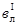
Это положение справедливо при 2,5 м/сек < νл <6,0 м/сек и при средних размерах льдин, подходящих к пролетам от d до 1,5 d (νл - скорость подхода льдин к пролетам гребенки).
Для гребенок с низким или высоким порогом, на подходе к которым отсутствуют гидравлические перепады и кривые спада водной поверхности, минимально необходимая ширина отдельных ледосбросных пролетов может определяться на основе следующих приближенных соотношений:
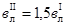
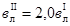
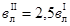
При невозможности устройства пролетов с шириной, определенной по этим зависимостям, необходима разработка комплекса мероприятий, направленных на снижение толщины и прочности основной массы сбрасываемого льда, что позволяет обеспечить пропуск льда через пролеты с меньшей шириной.
Для гребенок с высоким порогом, на подходе к которым ледяные поля, соизмеримые с общей шириной ледосбросного фронта, не ломаются на гидравлических перепадах, но могут ломаться на кривых спада водной поверхности непосредственно перед раздельными бычками, ширина ледосбросных пролетов должна определяться с учетом разлома ледяных полей на кривых спада.
Размер полос льда С в направлении вдоль потока, отделяющиеся от ледяных полей на кривых спада водной поверхности, можно определить по формуле
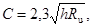
а ширина отдельных ледосбросных пролетов 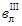
Раздельные бычки гребенок следует устраивать с вертикальной верховой гранью и заостренным оголовком. По длине пролета бычки должны иметь постоянную толщину и не иметь затопляемых при пропуске льда участков. Если по конструктивным, технологическим или каким-либо другим соображениям толщина бычков принята равной 6 - 10 м, то на входе в пролеты они могут иметь переменную толщину, уменьшающуюся в направлении оголовка.
Толщины раздельных бычков в гребенках бетонных плотин должны быть не больше 0,6 ширины ледосбросных пролетов. При большей толщине увеличивается сопротивление бычков продвижению льда в пролеты, а для гребенок с высоким порогом затрудняется разлом ледяных полей на кривых спада перед входом в пролет.
Для обеспечения разлома ледяных полей на кривых спада водной поверхности перед водосливами, близкими по очертанию к водосливам практического профиля, выдвижение раздельных бычков от верховой грани водослива в сторону верхнего бьефа должно быть меньшим 1,5Н (где Н - величина напора над гребнем водослива).
Общая ширина водосбросного фронта должна назначаться на основе изучения ледового режима реки с использованием опыта работы сооружений, находящихся в аналогичных условиях.
В тех случаях, когда река имеет ширину 1000 м > В > 150 м, ширина ледосбросного фронта определяется по соотношению:
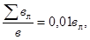
где
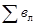
вл - минимально необходимая ширина отдельного ледосбросного
пролета (в зависимости от схемы пропуска льда величина вл может
приниматься равной соответственно , 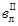
Глубина потока в ледосбросных пролетах гребенок с низким порогом должна быть не менее 4 - 5 м.
Для гребенок с высоким порогом и при подходе к ним льда, представленного ледяными полями, которые могут разламываться на кривых спада перед пролетами, минимальная величина напора, обеспечивающего беспрепятственный сброс льда, может определяться по формуле:
Нмин = h + 0,2 C,
где Нмин - минимальная величина напора над гребнем водослива, обеспечивающая беспрепятственный пропуск льда;
h - толщина льда.
Для донных отверстий учет условий пропуска льда сводится к установлению предельного затопления потолка донных отверстий из условия неподныривания льда и сроков задержания льда перед сооружениями. Для донных отверстий бетонных плотин высотой 5 - 15 м, работающих в строительный период полным сечением без вихревых воронок на входе, величину затопления их потолка, при которой прекращается подныривание льда, можно определять из следующих упрощенных соотношений:
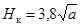
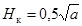
где а - высота донного отверстия на входном участке.
При наличии перед входом в донные отверстия интенсивных вихревых воронок, значения Нк следует увеличить в 1,5 раза.
При пропуске льда через донные отверстия на реках с тяжелыми ледоходами затопление их потолка не должно превышать высоту отверстий.
Для бетонных гравитационных плотин ширина донных отверстий, через которые необходимо осуществлять пропуск льда, по условиям прочности плотины не должна превышать:
а) для плотин высотой более 70 м - 50 % расстояния между сквозными температурными швами плотины;
б) для плотин высотой до 70 м - 60 % расстояния между сквозными температурными швами плотины.
Для обеспечения беспрепятственного пропуска льда через донные отверстия бетонных гравитационных плотин, ширина которых по условиям прочности отдельных секций плотины, в зависимости от высоты плотины и района строительства не может превышать 5 - 15 м, необходимо осуществлять временное задержание льда перед сооружениями с целью уменьшения его толщины и прочности.
Сроки временного задержания ледохода перед недостроенными сооружениями с донными отверстиями, предназначенными для пропуска льда, должны устанавливаться на основе прогнозируемого притока воды, развития ледовой обстановки в бьефах, хода стаивания и снижения прочности льда, аккумулирующей емкости перед сооружениями и с учетом опыта работы сооружений, находящихся в аналогичных условиях. Для рек с тяжелыми ледоходами этот срок не должен быть меньше 5 - 7 суток со дня вскрытия реки в нижнем бьефе.
При необходимости пропуска льда через тоннели и береговые траншейные водосбросы должны быть учтены общие положения по пропуску льда и опыт работы сооружений в аналогичных условиях. В качестве аналогов для ориентировочных расчетов пропуска льда для тоннелей могут быть приняты донные отверстия такого же сечения, а для береговых водосбросов - пролеты гребенок с низким или высоким порогом.
Пропуск льда через сооружения в строительный и эксплуатационный периоды следует предусматривать только в случаях, когда скорости течения в верхнем бьефе достигают величин, способных создать подвижку ледяных полей, отделенных от берегов.
При прямолинейном очертании берегов перед гидроузлом на участке длиной до 15 В средние скорости истока νср, при которых возможно движение льда к сооружениям, должны быть больше величин, определенных формулой:
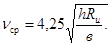
Снижение предела прочности льда изгибу определяется опытным путем (или по аналогии с другими реками).
При извилистом очертании берегов перед гидроузлом значения νcp необходимо увеличить на 30 %.
Для временного задержания ледохода перед сооружениями к подъему уровней в верхнем бьефе с целью создания меньших скоростей следует приступать после отделения ледяного покрова от берегов.
При невозможности обеспечить полное задержание льда перед сооружениями гидроузла в период его эксплуатации необходимо предусмотреть в его составе ледосбросные пролеты или отверстия, при проектировании которых необходимо учитывать общие положения по пропуску льда.
Для гидроузлов с поверхностными водосбросами, перекрытыми подъемными затворами, при отказе от сброса льда минимально необходимая величина их открытия по условиям предохранения от подныривания под затвор льдин ориентировочно равна 0,2 от полного открытия отверстия.
В целом ряде случаев для задержания льда в водотоках, перед сооружениями и на входах во всевозможные водопропускные отверстия применяются плавучие запани. При определении условий подныривания льда под запань можно рекомендовать пользоваться следующей экспериментально установленной зависимостью:
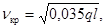
где l - длина льдины;
νкр - критическая скорость, начиная с которой происходит подныривание льдин данной длины.
Образование зажоров приводит к уменьшению пропускной способности русла, к повышению уровня воды выше зажора, что может вызвать затопление прилегающей местности, и понижению уровня ниже зажора. Образование шуги в русле реки и водохранилище является причиной серьезных ледовых затруднений на водозаборах (обмерзание труб, сорозадерживающих решеток, забивка оголовков), что часто может приводить к полному прекращению подачи воды.
Зажоры льда характерны для рек со значительной скоростью течения. Наблюдаются зажоры в период замерзания и в зимний период. В большинстве случаев на незарегулированных реках зажоры льда достигают опасных размеров в начале зимы. В нижних бьефах ГЭС и на многих горных реках максимальный зимний (зажорный) уровень может иметь место в любое время.
Процесс зажорообразования определяется комплексом факторов, которые можно разделить на две группы:
1. Факторы, способствующие образованию шуги.
2. Факторы, способствующие остановке и смерзанию шуговых масс.
Факторы первой группы определяются скоростным режимом потока и климатическими (температурными) условиями в районе. При определенном сочетании скорости течения (обычно превышающей 1 м/сек) и температуры воздуха происходит переохлаждение воды, ведущее к интенсивному образованию внутриводного льда и шуги.
Факторы второй группы определяются морфометрическими особенностями участка реки, создающими условия для задержки и смерзания шуги (повороты русла, переломы генерального продольного профиля, острова и отмели).
Таким образом, зажоры образуются, в основном, в тех же местах, где и заторы, если выше по течению происходят процессы интенсивного образования больших масс шуги. Это не исключает того, что имеются участки, где место образования зажоров от года к году меняется. Таким образом, условиями образования и развития зажоров являются:
а) наличие незамерзающего участка реки (перекаты, участки с повышенными скоростями, полыньи и пр.) или открытой водной поверхности водохранилища;
б) наличие отрицательной температуры воздуха ниже критической, вызывающей теплоотдачу с водной поверхности;
в) наличие турбулентного течения в водотоке или сильного ветрового волнения на водохранилище, способствующих переохлаждению водной массы и кристаллизации внутриводного льда;
г) повышенная шугонасыщенность потока в целом;
д) наличие особых орографических особенностей русла реки, способствующих задержанию ледяной массы (меандры, бифуркация и пр.), а также разные препятствия, в том числе и гидротехнические сооружения, острова и пр.;
е) изменение скоростей течения на реке (плесы-перекаты, места выклинивания кривых подпора водохранилищ и др.).
Скоростные условия в реке, влияющие на зажорообразование, можно подразделить следующим образом:
а) при ν = 0,4 - 0,5 м/сек и меньше замерзание реки происходит при образовании ледяного покрова. Если шуга уже образовалась выше по реке при скоростях ν > 0,5 м/сек, то, попав в зону скоростей ν ≤ 0,5 м/сек, шуга всплывает и движется в виде шугового ковра. При отрицательных температурах шуговой ковер быстро замерзает;
б) при ν = 0,7 - 0,067Н м/сек, где Н - глубина потока, м; шуговой ковер не будет подныривать;
в) при ν = 1,5 м/сек шуга начинает распределяться по всему сечению, частично покрывая и поверхность потока;
г) при ν > 1,5 м/сек происходит полное взвешивание шуги. Водная поверхность обнажается.
Устойчивость фронтальной кромки ледяного покрова зависит также от скоростных условий. При значении скорости, большей критической, кромка льда не будет устойчивой. Часть шуги уйдет под ледяной покров и будет служить материалом для формирования зажора.
В реальных условиях схема явления осложняется непрерывными колебаниями гидрометеорологических элементов. Так, при сильных морозах на реке образуется много льда, в особенности, если длина шугообразующего (т.е. незамерзшего) участка велика. Этот лед обладает значительной прочностью, и благодаря низкой температуре воздуха легко смерзается; кромка продвигается быстро, зажорный подъем уровня оказывается небольшим. Напротив, при слабых морозах к кромке подплывают тонкие непрочные льдинки и шуга; смерзание их происходит медленно, время от времени происходит торошение. В результате кромка продвигается постепенно со значительным подъемом уровня.
В нижних бьефах ГЭС процесс протекает аналогичным образом. Отличие состоит в том, что со временем движение кромки замедляется (за счет уменьшения длины ледообразующего участка), а затем вовсе прекращается. Размер полыньи при стабильном положении кромки определяется многими факторами - теплопотерями, расходом воды, температурой воды и т.п.
Методы предсказания зажоров льда, как и заторов, пока что разработаны очень слабо. Прогнозы возможны лишь в отдельных случаях, при более или менее постоянном месте образования зажора.
Предсказание максимального зажорного уровня осуществляется на основе связи его с водностью в предледоставный период, например, со средним расходом воды за ноябрь. Подобные связи получены для Ангары, Невы и Свири (заблаговременность прогнозов 1,0 - 1,3 месяца). На реках, где расход воды в предледоставный период подвержен значительным колебаниям, строится связь максимального зажорного уровня с расходом в период замерзания. Заблаговременность прогноза при этом уменьшается до 3 - 5 суток.
Мощность зажора, образующегося в нижнем конце незамерзающего участка реки, находится в прямой зависимости от объема льда. Соответственно, для целей прогноза можно установить связь максимального зажорного уровня со стоком льда.
Количественный расчет и прогноз хода уровня в период зажоров льда пока невозможны. Лишь на основании многолетнего опыта удается в общем верно оценить тенденцию в ходе уровня.
Борьба с зажорообразованием на реках может вестись, как и борьба с заторами, двумя путями:
1) путем принятия предупредительных мер;
2) путем ликвидации образовавшихся зажоров. При этом, поскольку процесс зажорообразования не мыслим без процесса шугообразования, необходимо воздействовать на оба процесса.
При разработке мероприятий, которые необходимы для предотвращения образования зажоров и борьбы с их развитием необходимо:
1) на основании анализа возможного сочетания главных факторов, определяющих образование и развитие зажоров, дать прогноз мест и времени образования зажора, рассмотрев гидрометеорологические особенности системы с точки зрения скоростей течения, температуры воздуха, направления и скорости ветра и морфологии;
2) в случае достаточной изученности системы и наличия данных о времени и месте образования зажоров за предшествующий период можно базироваться на фактических данных.
Методы предупреждения зажоров могут заключаться в искусственном установлении таких сочетаний основных факторов, при которых процесс ледообразования в водоеме и водном потоке шел бы в направлении или исключающем шугообразование или исключающем отложение шуги.
Как отмечалось выше, основными определяющими ледовый процесс факторами являются скорость течения, температурные условия и морфология русла. Из перечисленных факторов, можно воздействовать в более или менее полной мере на скоростные условия в потоке и морфологию. Термические условия потока находятся в зависимости от метеорологических условий, на которые воздействовать человек еще не в силах, поэтому изменять термику потока возможно в ограниченных пределах.
Исходя из этого, выделяют следующие группы методов регулирования потоков в целях борьбы с зажорами:
а) гидравлические,
б) термические,
в) механические.
Гидравлические методы - методы создания таких скоростных условий, при которых не будет происходить шугообразование и отложение шуги подо льдом. Это может быть достигнуто сооружением гидроузлов, устройством временных сооружений, проведением выправительных работ.
Термические методы - методы, основанные на внесении в поток дополнительного тепла, уменьшении теплоотдачи от воды, более рациональном использовании запасов тепла потока или водоема.
Гидравлические и термические методы тесно связаны друг с другом, так как в большинстве случаев рациональный термический режим создается соответствующим назначением гидравлического режима. Кроме того, гидравлические и термические методы регулирования наиболее легко и просто осуществить, если на реке имеются гидроузлы (путем установления надлежащего режима их эксплуатации).
Полного предотвращения зажоров можно добиться при наличии каскада ГЭС на реке. С этой целью предпочтительно строить ГЭС сверху вниз по течению. Наличие вышерасположенной станции дозволяет регулировать ледовый режим в районе строительства следующей ступени каскада.
Механические методы борьбы с зажорами связаны с ликвидацией уже образовавшихся зажоров. Они включены в главу VII, § 4.
При гидравлическом регулировании потока необходимо следующее:
а) установить скорости в реке, при которых не происходит образования шуги;
б) установить скоростной режим в данном створе, при котором не происходит образования зажора;
в) создать условия, при которых образуется зажор и аккумулируется шуга в неопасном месте;
г) увеличить расход (и скорости) с целью прорыва или размыва зажора, или смещения его вниз по течению.
Уменьшение скоростей течения обычно может быть достигнуто путем уменьшения расхода воды, проходящего через створ ГЭС, при наличии на реке гидростанций. Это мероприятие способствует:
а) ускорению образования ледяного покрова на реке, устраняющего переохлаждение воды и образование шуги;
б) уменьшению зашугованности русла. Уменьшение скоростей течения в поверхностном слое потока можно осуществить перекрытием русла льдинами, устройством запаней и задержанием движущейся шуги ветвями деревьев и т.д., что приводит к ускорению установления ледяного покрова и прекращению шугообразования в потоке.
В некоторых случаях, в целях уменьшения стока шуги в защищаемый район, бывает целесообразно создавать искусственный зажор (или несколько зажоров) выше по течению от защищаемого участка. Это достигается путем уменьшения поверхностных скоростей и с помощью установки запаней, ряжей, и т.п.
Увеличение скорости течения в местах обычного образования зажоров, опасных для затопления прилегающих
Уменьшение шугообразования производится путем уменьшения размеров зоны или длительности периода шугообразования. Иногда удается полностью предотвратить переохлаждение воды и, следовательно, образование шуги.
Практически это достигается путем уменьшения теплоотдачи с поверхности воды или увеличения теплосодержания водной массы. В последнем случае надо различать мероприятия, в которых используется тепло, содержащееся в самом водоеме (тепло глубинных слоев воды, соседних участков водоема, притоков и т.п.), и мероприятия, в которых используется тепло специально нагретой воды, подаваемой в водоем, или тепло грунтовых вод.
Тепловое воздействие на образовавшийся зажор производится путем подачи в зажор теплой воды, что приводит к уменьшению тела зажора (главным образом, снизу) и его прочности.
Важнейшими исходными данными при решении вопроса о целесообразности применения термического регулирования и выборе конкретного метода регулирования являются сведения о тепловом режиме водного объекта. Способы проектирования теплового режима зависят от типа водного объекта (река, нижний бьеф, верхний бьеф и т.д.) и изложены в специальной литературе.
Примечание. Практические приемы проектирования теплового режима водохранилищ даны в «Указаниях по термическому расчету водохранилищ» [41].
Мероприятия по борьбе с шугообразованием
Попуски воды из водохранилища. Это мероприятие может применяться для термического регулирования нижних бьефов гидроузлов и верховых участков водохранилищ (при наличии каскада гидроузлов).
Попуски воды из водохранилища производятся с целью уничтожения зоны шугообразования уменьшения ее размеров или переноса этой зоны на другой участок нижнего бьефа, менее опасный с точки зрения зажорообразования.
Возможны два варианта в практической реализации этого мероприятия: попуски теплой воды из глубинных слоев водохранилища; попуски холодной воды из поверхностных слоев водохранилища.
При первом варианте происходит отепление опасного участка, вследствие чего переохлаждение воды на нем частично или полностью исключается, и зона шугообразования переносился вниз по течению (отодвигается от гидроузла).
При втором варианте, напротив, кромка ледостава придвигается к гидроузлу, вследствие чего опасный участок оказывается покрытым льдом (полностью или частично), что исключает возможность переохлаждения воды и образования шуги. При реализации этого варианта необходимо учитывать, что в нижнем бьефе образуется льда больше, чем обычно. Поэтому в случае более раннего вскрытия верховых участков реки (верхнего бьефа) могут возникнуть осложнения при пропуске через гидроузел весеннего ледохода (заторы в нижнем бьефе и т.п.).
Термические расчеты при рассматриваемом мероприятии заключаются в следующем:
а) расчет вертикального распределения температуры воды в водохранилище для периода времени, когда производятся попуски воды;
б) расчет изменения температуры по длине, положения изотермы 0 °С и кромки льда в нижнем бьефе для различных вариантов сброса воды на водохранилища.
На основании результатов этих расчетов, с учетом конструктивных особенностей гидроузла (наличие водосливной плотины, глубинных или донных водопропускных отверстий и т.д.) и экономических показателей, решается вопрос об оптимальном способе сброса воды из водохранилища.
Сброс воды из притоков или вышерасположенных участков водотока. Это мероприятие применяется для термического регулирования верхних и нижних бьефов гидроузлов, незарегулированных (по стоку) рек, деривационных каналов и т.д. (Последствия этого мероприятия и связанные с ним расчеты в принципе не отличаются от рассмотренных выше; различие состоит лишь в источнике сбрасываемой воды).
Выпуск подогретых вод (вода ТЭЦ, специально нагретая вода, грунтовые теплые воды и т.д.). Это мероприятие также может применяться для термического регулирования верхних и нижних бьефов ГЭС незарегулированных рек и каналов и т.п. Выпуск подогретой воды приводит к тем же результатам, что и попуски теплой воды из водохранилища, п. 1. Различают два способа выпуска подогретых вод:
1) выше (по течению) участка, опасного по условиям зажорообразования;
2) непосредственно на опасный участок.
Гидротермические расчеты при первом способе выпуска теплой воды включают в себя: определение изменения температуры воды по длине водотока, местоположения нулевой изотермы и кромки льда для различных значений температуры выпускаемой воды.
При втором способе водовыпуска расчету подлежит температура воды, образующаяся в результате смешения подогретых и неподогретых вод. Этот расчет выполняется по уравнению теплового баланса.
Подъем теплых глубинных вод с помощью методов воздухообдува и потокообразователей. Это мероприятие может применяться для термического регулирования верхних бьефов, а также других водных объектов, в том случае, когда выше опасного участка имеются зоны с достаточно высокой температурой в глубинных и придонных слоях. Воздухообдув и потокообразователи могут применяться также с целью подъема воды из глубинных слоев водохранилища к водосбросным отверстиям плотины и последующего сброса этой воды в нижний бьеф.
Применение указанных методов целесообразно при следующих (приближенных) соотношениях между глубиной воды и придонной температурой: при глубине до 10 м - температура выше 0,5 - 0,7 °С, при глубине более 10 м - температура выше 1 - 1,5 °С.
Гидротермические расчеты, связанные с применением метода воздухообдува и потокообразователей, включают в себя:
а) расчет вертикального распределения температуры с целью выявления зоны с достаточно теплой водой;
б) расчет параметров установки, возбуждающей циркуляцию воды.
Способы расчета и практика применения установок описаны в книге В.В. Баланина, Б.С. Бородкина и Г.И. Мелконяна.
Снижение теплоотдачи с водной поверхности. Снижение теплоотдачи с открытой водной поверхности может быть достигнуто, главным образом, путем уменьшений скорости ветра. С этой целью можно рекомендовать искусственные перекрытия, ограждения, лесонасаждения и т.п. Обычно эти методы дают эффект на малых объектах.
Ускорение образования ледяного покрова. Это мероприятие может осуществляться, главным образом, путем регулирования гидравлического режима потока (§ 3 данной главы).
Мероприятия по ликвидации зажоров
Ввиду ограниченности сведений о практическом применении термического регулирования для борьбы с образовавшимся зажором, излагаемые ниже мероприятия должны рассматриваться как опытные.
Мероприятия по борьбе с образовавшимся зажором заключается в подаче подогретой воды в зажор. Для получения подогретой воды могут использоваться специальные береговые или плавучие установки, сбросы вод с ТЭЦ, промышленных предприятий и. т.п.
Необходимое количество тепла находится из условия нарушения связей между зернами шуги и, следовательно, уменьшения прочности зажора. Место подачи в зажор тепла определяется размерами зоны, на протяжении которой температура выпускаемой недогретой воды падает до 0 °С. В ряде случаев выпуск теплой воды должен производиться в нескольких местах.
На небольших реках при частичной забивке русла шугой, а также при небольших размерах зажора, выпуск теплой воды может производиться с целью частичного растопления шуги снизу зажора и увеличения пропускной способности русла.
Ликвидация образовавшихся зажоров путем подачи тепла в тело зажора должна сочетаться с применением взрывов, которые при их индивидуальном применении малоэффективны. Ликвидация зажоров с помощью взрывов изложена в гл. VII § 4.
К сожалению, малый опыт борьбы с зажорами лишает возможности рекомендовать какие-нибудь более подробные данные о применении различных методов.
1. АНГЕЛОПУЛО П.П. Динамика заторов льда на р. Западная Двина в районе г. Яунелгава: Сборник работ Рижской гидрометеорологической обсерватории, № 6, 1964.
2. АНТИПИН В.А., КАРАБАТ Д.П. Подрывные работы при ледоходе. Трансжелдориздат, 1944, 1954.
3. АНТОНОВ З.С. Методы прогнозирования вскрытия устьевых участков рек моря Лаптевых. Труды ААНИИ, т. 209, вып. 3, 1958.
4. БАЛАНИН В.В., БОРОДКИН Б.С., МЕЛОКОНЯН Г. И. Использование тепла глубинных вод водоемов. «Транспорт», 1964.
5. БЕЗУГЛОВ А.А. Ледяные заторы на р. Немунас (Неман). Труды Вильнюсского Государственного университета, 1959.
6. БЕРДЕННИКОВ В.П. Динамические условия образования заторов льда на реках. Труды ГГИ, вып. 110, 1964.
7. БЕРДЕННИКОВ В.П. О методике изучения формирования зажоров. Труды III Всесоюзного Гидрологического съезда, т. III, 1959.
8. БИБИКОВ Д.Н., ПЕТРУНИЧЕВ Н.Н., Ледовые затруднения на гидростанциях. Госэнергоиздат, 1950.
9. Временная инструкция по производству взрывных работ при пропуске ледохода у железнодорожных мостов. Трансжелдориздат, 1948.
10. Временные указания на применение пенольда, как теплоизоляции в суровых климатических условиях, «Энергия», 1965.
11. ЕСТИФЕЕВ A.M., ПЕХОВИЧ А.И. Зачернение поверхности ледяного покрова, как метод ускорения весеннего таяния снега. Известия ВНИИГ, т. 65, 1960
12. ЕСТИФЕЕВ A.M. Регулирование шугового потока на гидроэлектростанциях. Госэнергоиздат, 1958.
13. ЗАХАРОВ В.П., ЧИЖОВ О.П. О борьбе с ледяными заторами на р. Сыр-Дарье путем взрывных работ. Гидрология и Метеорология, № 1, 1956.
14. ИСИЛА И.М. Исследования ледовозаторного режима Сев. Двины и Сухоны у г. Великий Устюг. Информационное письмо Северного УГМС, № 1(24), 1962.
15. КАРНОВИЧ В.Н., СИНОТИН В.И., СОКОЛОВ И.Н. Особенности заторообразования на р. Днестре. Возможность расчета заторных уровней. Труды координационных совещаний по гидротехнике, вып. 56, «Энергия» 1970.
16. КАРНОВИЧ В.Н. Влияние интенсивности подъема уровня воды на процесс заторообразования и возможность прогноза максимальных заторных уровней на р. Днестре. Труды координационных совещаний по гидротехнике, вып. 56, «Энергия», 1970.
17. КОМОВ Н.И. Весенние заторы льда в низовьях Лены. Труды ААНИИ, т. 283, 1968.
18. КОНОВАЛОВ И.М., БАЛАНИН В.В., ЩЕРБАКОВА Р.И. Заторы и борьба с ними, Труды ЛИВТ, 1935.
19. КОРЕНЬКОВ В.А. Основные схемы и решающие факторы пропуска льда при строительстве ГЭС в условиях Сибири. Труды координационных совещаний по гидротехнике, вып. 42, «Энергия», 1968.
20. КРАВЧЕНКО Н.А. Формирование заторов льда на Днестре и методика их изучения. Труды III Всесоюзного Гидрологического съезда, т. III, 1959.
21. КРИЦКИЙ С.Н., МЕНКЕЛЬ М.Ф., РОССИНСКИЙ К.И. Зимний термический режим водохранилищ рек и каналов. Госэнергоиздат, 1947.
22. ЛЕБЕДЕВ П.Ф. Амурские заторы льда и их предупреждение. Труды ЛИВТ, вып. 30, 1962.
23. ЛИНЕНКО Д. Инструкторско-методическое занятие с сержантами на тему «Подрывание льда и ледяных заторов». Военно-инженерный журнал, № 3, 1950.
24. ЛИСЕР И.Я. Весенние заторы льда на реках Сибири. Гидрометеоиздат, Л., 1967.
25. МИШЕЛЬ Б. Статическое равновесие заторов во время ледоходов. Труды XI конгресса МАГИ, т. 5, 1965.
26. МЯСНИКОВ М.В. Заторные явления на р. Иртыше, предупреждение и борьба с ними. Труды ЛИВТ, вып. 30, 1962.
27. Наставление ГУГМС, вып. 10, часть 1.
28. ОРЛОВ П.А. Енисейские заторы льда, предупреждение и борьба с ними. Труды ЛИВТ, вып. 30, 1962.
29. ОРЛОВ П.А. К вопросу формирования и разрушения заторов, Труды Академии речного транспорта, вып. 1, 1952.
30. ПАРИЗЕ Э., ОССЕ Р., ГАНЬОН Л. Исследование образования и изменения состояния ледяного покрова и заторов на реках. Труды XI конгресса МАГИ, т. 5 Л., 1965.
31. ПАСТОРС А.Н. Метод локальных прогнозов заторов льда и связанных с ними опасных явлений. Методические записки УГМС, Латв. ССР, 1951.
32. ПИОТРОВИЧ В.В. Появление, рост и исчезновение ледяного покрова на реках Европейской территории СССР. Труды ЦИП, вып. 6, Гидрометеоиздат, 1948.
33. ПОПОВ Е.Г. Заторы льда и проблема борьбы с ними. Гидрология и Метеорология, № 8, Гидрометеоиздат, 1968.
34. РУДНЕВ А.С. Типизация заторов льда на р. Лене. Сб. работ Якутской ГМО, вып. 2, Якутск.,1969.
35. Руководство по гидрологическим прогнозам, вып. 4, Гидрометеоиздат, 1963.
36. РЫМША В.А. Ледовые исследования на реках и водохранилищах. Гидрометеоиздат, 1959.
37. СИНОТИН В.И., КАРНОВИЧ В.Н. Некоторые соображения о борьбе с заторами льда бомбометанием и взрывными работами. Труды координационных совещаний по гидротехнике, вып. 56, «Энергия», 1970.
38. СОКОЛОВ И.Н. Влияние прочности льда на условия его пропуска через гидротехнические сооружения. Труды координационных совещаний по гидротехнике. Вып. 10, «Энергия», 1964.
39. СОФЕР М.Г. Об условиях прорыва заторов льда на р. Малой Северной Двине в районе г. Котласа. Известия Всесоюзного Географического общества, вып. 3, 1967.
40. «Указания по определению ледовых нагрузок на речные сооружения». СН-76-66. Изд. литературы по строительству, М., 1967.
41. «Указания по термическому расчету водохранилищ», ВСН-18-68, 1969.
42. ФАЙКО Л.И. О причинах устойчивости ледяных заторов на Северных реках. Гидрология и Метеорология, № 6, 1968.
43. ФЕДОРОВ М.К. Заторные и зажорные явления и их развитие на р. Лене. Труды ААНИИ, т. 204, Л., 1956.
44. ЧЕКРЕНЕВ А.И. и др. Практическое пособие по производству выправительных работ на внутренних водных путях. Лениздат, «Речной транспорт», 1961.
45. ШАДРИН Г.С. К вопросу об образовании заторов в хвосте водохранилищ. Труды координационных совещаний по гидротехнике, вып. 17, «Энергия», 1965.
46. ШАТАЛИНА И.Н., СПЕЦОВ Ф.А. Опыт применения химических веществ для ослабления прочности льда. Труды ЛИВТ, вып. 16, 1963.
47. ШУЛЯКОВСКИЙ Л.Г., ЕРЕМИНА В.Д. К методике прогноза максимальных заторных уровней воды (на пр. р. Томь). Гидрология и Метеорология, № 1, 1952.
48. ШУЛЯКОВСКИЙ Л.Г. О прогнозе ледяных заторов при вскрытии рек. Труды ЦИП, вып. 8, 1948.